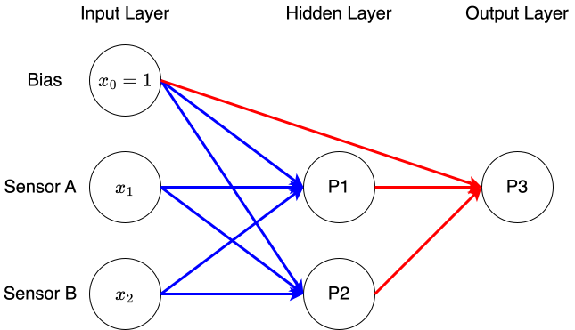
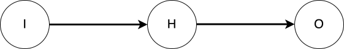

Überwachtes Lernen
Überwachtes Lernen ist ein Verfahren des maschinellen Lernens, bei dem ein Modell mit beschrifteten Daten trainiert wird. Das bedeutet, dass zu jedem Eingabewert die richtige Ausgabe bekannt ist. Das Modell lernt, Zusammenhänge zwischen Eingaben und Ausgaben zu erkennen, um später für neue, unbekannte Daten Vorhersagen zu treffen. Typische Anwendungsbeispiele sind die Klassifikation und die Regression.
Damit das Modell möglichst genaue Vorhersagen liefert, müssen seine Parameter während des Trainings geeignet angepasst werden. Hierzu wird zunächst mithilfe einer Fehler- bzw. Kostenfunktion bestimmt, wie stark die Modellvorhersagen von den tatsächlichen Zielwerten abweichen.
Zur Minimierung dieses Fehlers wird häufig das Verfahren des Gradientenabstiegs verwendet. Dabei werden die Modellparameter schrittweise in Richtung eines Minimums der Kostenfunktion angepasst. Die Berechnung der notwendigen Gradienten erfolgt insbesondere bei neuronalen Netzen mithilfe des Backpropagation-Algorithmus. Dieser bestimmt, wie stark einzelne Parameter zum Gesamtfehler beitragen, sodass die Gewichte des Modells gezielt optimiert werden können.
Gradientenabstieg
In diesem Kapitel wird eine Vorübung durchgeführt. Sie dient dazu, das Verfahren des Gradientenabstiegs schrittweise zu verstehen und praktisch anzuwenden.
Vorgegeben ist das mathematische Modell \(f\) , welches für die Eingabe \(\boldsymbol{x}\) das Ergebnis \(y\) berechnet: \(y=f(\boldsymbol{x})\) . Das Modell hat eine Vielzahl von Modellparametern, z.B. Gewichte und Schwellwerte eines Perzeptrons. Für ein Perzeptron mit einer zweidimensionalen Eingabe \(\boldsymbol{x} = \{x_1, x_2\}\) und der Aktivierungsfunktion \(\phi(z) = \left(1+\exp(-z)\right)^{-1}\) (Sigmoid-Funktion) wird das Modell zu:
\[
y = \frac{1}{1+\exp(-(x_0\cdot w_0 + x_1\cdot w_1 + x_2\cdot w_2))} = f(\boldsymbol{x}, \boldsymbol{w} = \{w_0, w_1, w_2\})
\]
Dabei ist \(z = \boldsymbol{x}\cdot \boldsymbol{w}\) .
Das Ziel des überwachten Lernens ist die Modellparameter so zu bestimmen, dass die Modellfunktion die vorgegebenen Daten (Trainingsdaten \(\boldsymbol{\hat{x}}, \hat{y}\) ) möglichst gut repräsentiert.
Abstandsfunktion
Um die Abweichung bzw. Abstand zwischen zwei Punktmengen, z.B. die Vorhersagen eines Modells \(\left(o = f \left( \boldsymbol{x} \right) \right)\) und der Trainingszieldaten \(\left( \hat{y} \right)\) , zu bestimmen, kann beispielsweise folgende Fehlerfunktion \(E\) mit der Loss-Funktion \(J\) genutzt werden:
\[
E = \sum_i J(o,\hat{y}) \quad \text{mit} \quad J(o,\hat{y}) = \frac{1}{2}\left(o - \hat{y}\right)^2
\]
Das Ziel ist also die Werte der Modellparameter zu finden, welche die Fehlerfunktion \(E = (\boldsymbol{w}; \boldsymbol{\hat{x}}, \hat{y})\) bei gegebenen Trainingsdatensatz minimieren.
Minimierung
Im Allgemeinen kann bei nicht-linearen Funktionen das Minimum nicht direkt bestimmt werden. Hier werden numerische Verfahren zum Minimierung verwendet. Ein häufig verwendetes Verfahren ist das Gradientenverfahren . Das interative Verfahren nutzt den lokalen Wert des Gradienten der zu Minimierenden Funktion um die nächsten Iterationsschritte zu bestimmten. Für eine Funktion \(G(\boldsymbol{x})\) sieht die Interation wie folgt aus:
\[
\boldsymbol{x}^{k+1} = \boldsymbol{x}^k +| \alpha \left.\left( \frac{\partial G}{\partial x_1}, \cdots, \frac{\partial G}{\partial x_n}\right)\right|_{\boldsymbol{x}^k}
\]
Dabei gibt der Parameter \(\alpha\) die Schrittweite vor.
Aufgabe 1: Implementierung des Gradientenverfahrens
Implementieren Sie in Python das obige Verfahren für die Funktion
\[
G(\boldsymbol{x},y)
=
-2\,\exp\!\left(-\frac{(x-A_1)^2 + (y-B_1)^2}{D_1}\right)
-
\exp\!\left(-\frac{(x-A_2)^2 + (y-B_2)^2}{D_2}\right)
\] .
Dabei sind \(A_1\) ,\(B_1\) und \(A_2\) ,\(B_2\) die festen Zentren der beiden Gaußfunktionen. Die Parameter \(D_1\) und \(D_2\) bestimmen deren Breite.
Code anzeigen
import numpy as npimport matplotlib.pyplot as plt= np.linspace(- 5 , 5 , 100 )= np.linspace(- 5 , 5 , 100 )= np.meshgrid(x,y)def my_f(x,y):= 1.0 = 1.0 = 0.0 = - 3.0 = 2.0 = 8.0 return - 2 * np.exp(- ((x- A1)** 2 + (y- B1)** 2 )/ D1) - 1 * np.exp(- ((x- A2)** 2 + (y- B2)** 2 )/ D2)def my_fp(x,y):= 1.0 = 1.0 = 0.0 = - 3.0 = 2.0 = 8.0 = - 2 * (x- A1)/ D1 * (- 2 * np.exp(- ((x- A1)** 2 + (y- B1)** 2 )/ D1)) + (- 2 * (x- A2)/ D2 * (- 1 * np.exp(- ((x- A2)** 2 + (y- B2)** 2 )/ D2)))= - 2 * (y- B1)/ D1 * (- 2 * np.exp(- ((x- A1)** 2 + (y- B1)** 2 )/ D1)) + (- 2 * (y- B2)/ D2 * (- 1 * np.exp(- ((x- A2)** 2 + (y- B2)** 2 )/ D2)))return fpx, fpy= my_f(X,Y)= [- 5 , 5 , - 5 , 5 ], origin= 'lower' )# plt.quiver(X, Y, *my_fp(X,Y), scale=20) # plt.xlim([-3,3]) # plt.ylim([-3,3])
Die Abbildung veranschaulicht den Verlauf des Gradientenabstiegs. Ausgehend von einem zufälligen Startwert werden die Modellparameter schrittweise angepasst, bis die Kostenfunktion minimiert wird.
Code anzeigen
= [4 ]= [- 0.9 ]= 0.25 for i in range (100 ):= x0s[- 1 ]= y0s[- 1 ]= my_fp(cx, cy)= cx - alpha* dx= cy - alpha* dy= [- 5 , 5 , - 5 , 5 ], origin= 'lower' )0 ], y0s[0 ], marker= 'x' , s= 120 , c= 'red' )'o' , ms= 2 , color= 'red' )
Die Abbildung zeigt die Entwicklung der Koordinaten x und y während des Optimierungsprozesses. In jedem Schritt werden die Parameter entlang des negativen Gradienten aktualisiert, sodass sich die Lösung schrittweise dem Minimum der Kostenfunktion annähert.
Code anzeigen
= 'x' )= 'y' )= 1 , color= 'red' )
Backpropagation – Einzelnes Perzeptron
Bei dem Lernverfahren Backpropagation wird der Gradient der Fehlerfunktion (als Funktion der Gewichte und Schwellwerte) genutzt um die Minimierung durchzuführen. Dafür muss der Gradient für das Netzwerk bestimmt werden, welcher sich im allgemeinen aus einer Verschachtelung der Kettenregel für Ableitungen zusammensetzt. Bei der Verbindung von mehreren Perzeptronen / Neuronen zu einem Netzwerk, wird so effektiv bei diesem Verfahren das Netz rückwärts durchlaufen wodurch die Ausbreitung der Fehlerkorrektur von der Ausgabeschicht in die Eingabeschicht bewegt – deshalb der Name ‘Backpropagation’.
Für ein einzelnes Perzeptron mit einer linearen Aktivierungsfunktion \(\phi(z) = z\) gilt für die Modellfunktion:
\[
y = f(\boldsymbol{x}) = \boldsymbol{x}\cdot\boldsymbol{w}
\]
und für die Fehlerfunktion:
\[
E = \frac{1}{2}\left(y - \hat{y}\right)^2 = \frac{1}{2}\left(\boldsymbol{\hat{x}}\cdot\boldsymbol{w} - \hat{y}\right)^2
\]
Die partielle Ableitung nach \(w_1\) ist somit
\[
\frac{\partial E}{\partial w_1} = \hat{x}_1 \left( \boldsymbol{\hat{x}}\cdot\boldsymbol{w} - \hat{y}\right)
\]
Und der Gradient:
\[
\nabla E = \boldsymbol{\hat{x}} \left( \boldsymbol{\hat{x}}\cdot\boldsymbol{w} - \hat{y}\right)
\]
Im Folgenden wird das Verfahren Backpropagation an einem einzigen Datenpunkt demonstriert, welcher immer wieder durchlaufen wird.
In jedem Schritt wird dabei der Abstand zwischen dem Output und dem Zielwert bestimmt und die Gewichte mit Gradientenabstieg angepasst.
Die Gewichte konvergieren zur kleinsten Lösung.
Code anzeigen
# Perfect Match # y = x1*3.4 + x2*0.7 - x3*2.3 = [[1 ,2 ,3 ], [2 ,- 3 ,4 ], [4 ,2 ,0 ]]= [3.4 + 1.4 - 6.9 , 6.4 - 2.1 - 9.2 , 13.6 + 1.4 + 0 ]def forward(x, w):return np.dot(x,w)= 2 = np.array([1 ] + Xtrain[ci])= Ytrain[ci]= np.zeros(4 )= [cw]= 0.01 for i in range (20 ):= forward(cx, cw)print (cf, cf- cy, cw)= 2 * cx* (np.dot(cx,cw) - cy)= cw - alpha* cg= np.array(w_history)
0.0 -15.0 [0. 0. 0. 0.]
6.3 -8.7 [0.3 1.2 0.6 0. ]
9.954 -5.045999999999999 [0.474 1.896 0.948 0. ]
12.073319999999999 -2.926680000000001 [0.57492 2.29968 1.14984 0. ]
13.3025256 -1.6974744000000008 [0.6334536 2.5338144 1.2669072 0. ]
14.015464847999999 -0.9845351520000012 [0.66740309 2.66961235 1.33480618 0. ]
14.428969611839998 -0.5710303881600023 [0.68709379 2.74837516 1.37418758 0. ]
14.6688023748672 -0.33119762513280016 [0.6985144 2.7940576 1.3970288 0. ]
14.807905377422976 -0.1920946225770237 [0.70513835 2.82055341 1.4102767 0. ]
14.888585118905326 -0.11141488109467446 [0.70898024 2.83592098 1.41796049 0. ]
14.935379368965087 -0.06462063103491289 [0.71120854 2.84483417 1.42241708 0. ]
14.962520033999752 -0.037479966000248055 [0.71250095 2.85000382 1.42500191 0. ]
14.978261619719856 -0.021738380280144298 [0.71325055 2.85300221 1.42650111 0. ]
14.987391739437516 -0.012608260562483764 [0.71368532 2.85474128 1.42737064 0. ]
14.992687208873761 -0.007312791126238949 [0.71393749 2.85574994 1.42787497 0. ]
14.99575858114678 -0.004241418853219159 [0.71408374 2.85633497 1.42816748 0. ]
14.997539977065133 -0.0024600229348674674 [0.71416857 2.85667428 1.42833714 0. ]
14.998573186697778 -0.001426813302222385 [0.71421777 2.85687108 1.42843554 0. ]
14.999172448284712 -0.0008275517152878109 [0.71424631 2.85698523 1.42849261 0. ]
14.999520020005132 -0.0004799799948678185 [0.71426286 2.85705143 1.42852572 0. ]
Code anzeigen
= np.array([forward(cx, w) - cy for w in w_history])= (7 , 5 ))= plt.scatter(w_history[:, 0 ], w_history[:, 1 ], c= f_history, s= 60 )= plt.colorbar(sc)"Fehler ŷ − y" , fontsize= 11 )r" $ w_0 $ ( Bias ) " , fontsize= 11 )r" $ w_1 $ ( Gewicht für $ x_1 $ ) " , fontsize= 11 )r"Gewichtspfad im 2D-Raum ( $ w_0 $ vs . $ w_1 $ ) " , fontsize= 12 )True , alpha= 0.3 )
Jetzt werden mehrere Datenpunkte verwendet.
Das bisher trainierte Modell hat gelernt, genau einen Punkt vorherzusagen – für die anderen beiden Punkte wären die Gewichte nutzlos gewesen.
Nun wird das Modell mit mehrenen Datenpunkten, hier drei, trainiert. Damit wird das \(\boldsymbol{\hat{x}}\) zu \(\mathbf{\hat{X}}\) , einer Matrix, die aus den Eingangsvekoren aller Datenpunkte besteht. \(\hat{y}\) wird zum Vektor \(\boldsymbol{\hat{y}}\) , welcher die Zielwerte aller drei Datenpunkte enthält.
Der Gradient berechnet sich entsprechend als:
cg = (cx·w - y) · cx → entspricht: Xᵀ(Xw - y)Da das Modell jetzt auf allen drei Punkten trainiert, kann es zur wahren Lösung w = [0, 3.4, 0.7, -2.3] konvergieren.
Code anzeigen
# Perfect Match # y = x1*3.4 + x2*0.7 - x3*2.3 = [[1 ,2 ,3 ], [2 ,- 3 ,4 ], [4 ,2 ,0 ]]= [3.4 + 1.4 - 6.9 , 6.4 - 2.1 - 9.2 , 13.6 + 1.4 + 0 ]def forward(x, w):return np.matmul(x,w)= np.ones((3 ,4 ))1 :] = np.array(Xtrain)= np.array(Ytrain)= np.zeros(4 )= [cw]= 0.01 for i in range (200 ):= forward(cx, cw)print (cf, cf- cy, cw)# cg = 2*np.matmul(cx,(np.matmul(cx,cw) - cy)) = np.matmul(np.matmul(cx,cw) - cy, cx)= cw - alpha* cg= np.array(w_history)
[0. 0. 0.] [ 2.1 4.9 -15. ] [0. 0. 0. 0.]
[ 0.594 -1.209 2.814] [ 2.694 3.691 -12.186] [ 0.08 0.481 0.405 -0.259]
[ 0.95445 -2.19318 5.01987] [ 3.05445 2.70682 -9.98013] [ 0.13801 0.86768 0.70557 -0.48746]
[ 1.1508804 -2.9807226 6.7595922] [ 3.2508804 1.9192774 -8.2404078] [ 0.1801986 1.1822043 0.9252882 -0.6873663]
[ 1.23215008 -3.60187282 8.13992028] [ 3.33215008 1.29812718 -6.86007972] [ 0.2109011 1.44092626 1.08265707 -0.86166381]
[ 1.23290329 -4.08540209 9.2416997 ] [ 3.33290329 0.81459791 -5.7583003 ] [ 0.23319912 1.6560454 1.19215948 -1.0135534 ]
[ 1.17790101 -4.45699375 10.12654353] [ 3.27790101 0.44300625 -4.87345647] [ 0.24930712 1.83675643 1.26510536 -1.14612441]
[ 1.08495638 -4.73870302 10.84166811] [ 3.18495638 0.16129698 -4.15833189] [ 0.26083261 1.99005555 1.31030665 -1.26218169]
[ 0.96694607 -4.94898823 11.42343282] [ 3.06694607 -0.04898823 -3.57656718] [ 0.26895339 2.12131332 1.33461307 -1.36418226]
[ 0.83320414 -5.10301989 11.89995643] [ 2.93320414 -0.20301989 -3.10004357] [ 0.27453949 2.23468631 1.34333585 -1.45423112]
[ 0.69049923 -5.21310099 12.2930678 ] [ 2.79049923 -0.31310099 -2.7069322 ] [ 0.27823808 2.33341641 1.34058204 -1.53410644]
[ 0.54372734 -5.28910766 12.61977166] [ 2.64372734 -0.38910766 -2.38022834] [ 0.28053342 2.42005073 1.32951767 -1.60529738]
[ 0.39640848 -5.33890397 12.89335738] [ 2.49640848 -0.43890397 -2.10664262] [ 0.28178951 2.49660474 1.31257446 -1.6690449 ]
[ 0.2510464 -5.36871026 13.12424269] [ 2.3510464 -0.46871026 -1.87575731] [ 0.28228089 2.56468444 1.29161202 -1.72638099]
[ 0.10939152 -5.38341864 13.32061886] [ 2.20939152 -0.48341864 -1.67938114] [ 0.2822151 2.62557847 1.26804493 -1.77816397]
[-0.02736523 -5.38685685 13.48894622] [ 2.07263477 -0.48685685 -1.51105378] [ 0.28174918 2.68032818 1.24294217 -1.82510897]
[-0.15844849 -5.38200531 13.63433609] [ 1.94155151 -0.48200531 -1.36566391] [ 0.28100194 2.72978112 1.21710484 -1.86781374]
[-0.28339098 -5.37117344 13.76084603] [ 1.81660902 -0.47117344 -1.23915397] [ 0.28006312 2.77463226 1.19112693 -1.90678007]
[-0.40195287 -5.3561416 13.87170876] [ 1.69804713 -0.4561416 -1.12829124] [ 0.2790003 2.8154558 1.16544262 -1.94243141]
[-0.51406098 -5.33827462 13.96950993] [ 1.58593902 -0.43827462 -1.03049007] [ 0.27786416 2.85272981 1.14036326 -1.97512716]
[-0.61976301 -5.31861205 14.05632657] [ 1.48023699 -0.41861205 -0.94367343] [ 0.27669241 2.88685552 1.11610604 -2.00517434]
[-0.71919287 -5.29793956 14.13383502] [ 1.38080713 -0.39793956 -0.86616498] [ 0.2755129 2.91817233 1.09281641 -2.03283697]
[-0.81254453 -5.27684538 14.20339521] [ 1.28745547 -0.37684538 -0.79660479] [ 0.27434587 2.94696964 1.07058538 -2.0583436 ]
[-0.90005234 -5.25576462 14.26611659] [ 1.19994766 -0.35576462 -0.73388341] [ 0.27320582 2.97349619 1.049463 -2.08189345]
[-0.98197616 -5.23501402 14.32290975] [ 1.11802384 -0.33501402 -0.67709025] [ 0.27210282 2.99796734 1.02946878 -2.1036613 ]
[-1.05859035 -5.21481925 14.37452698] [ 1.04140965 -0.31481925 -0.62547302] [ 0.27104363 3.02057099 1.01059969 -2.12380145]
[-1.1301755 -5.19533615 14.42159402] [ 0.9698245 -0.29533615 -0.57840598] [ 0.27003246 3.0414722 0.99283638 -2.14245097]
[-1.19701238 -5.17666733 14.46463516] [ 0.90298762 -0.27666733 -0.53536484] [ 0.26907163 3.06081692 0.97614792 -2.15973226]
[-1.25937763 -5.15887507 14.50409291] [ 0.84062237 -0.25887507 -0.49590709] [ 0.26816208 3.07873498 0.96049545 -2.17575519]
[-1.31754059 -5.14199135 14.54034364] [ 0.78245941 -0.24199135 -0.45965636] [ 0.26730367 3.09534255 0.94583489 -2.19061886]
[-1.37176121 -5.1260256 14.57370987] [ 0.72823879 -0.2260256 -0.42629013] [ 0.26649556 3.11074403 0.93211909 -2.20441299]
[-1.42228861 -5.11097071 14.60447007] [ 0.67771139 -0.21097071 -0.39552993] [ 0.26573633 3.12503376 0.91929935 -2.21721913]
[-1.46936026 -5.09680762 14.63286645] [ 0.63063974 -0.19680762 -0.36713355] [ 0.26502422 3.13829726 0.9073266 -2.22911164]
[-1.51320152 -5.08350891 14.65911115] [ 0.58679848 -0.18350891 -0.34088885] [ 0.26435723 3.15061236 0.89615224 -2.24015853]
[-1.55402549 -5.07104143 14.68339121] [ 0.54597451 -0.17104143 -0.31660879] [ 0.26373323 3.1620501 0.88572878 -2.25042213]
[-1.59203315 -5.05936845 14.70587259] [ 0.50796685 -0.15936845 -0.29412741] [ 0.26314998 3.17267554 0.87601023 -2.25995971]
[-1.62741355 -5.04845111 14.72670339] [ 0.47258645 -0.14845111 -0.27329661] [ 0.26260527 3.18254834 0.86695238 -2.26882398]
[-1.66034422 -5.03824966 14.74601643] [ 0.43965578 -0.13824966 -0.25398357] [ 0.26209689 3.19172336 0.85851305 -2.27706352]
[-1.6909916 -5.02872427 14.76393145] [ 0.4090084 -0.12872427 -0.23606855] [ 0.26162266 3.20025114 0.85065212 -2.28472321]
[-1.7195115 -5.01983569 14.78055682] [ 0.3804885 -0.11983569 -0.21944318] [ 0.26118051 3.20817828 0.84333159 -2.29184449]
[-1.74604968 -5.01154565 14.79599099] [ 0.35395032 -0.11154565 -0.20400901] [ 0.26076841 3.21554784 0.83651562 -2.29846572]
[-1.77074231 -5.00381722 14.81032372] [ 0.32925769 -0.10381722 -0.18967628] [ 0.26038445 3.22239961 0.83017042 -2.3046224 ]
[-1.79371655 -4.99661495 14.82363707] [ 0.30628345 -0.09661495 -0.17636293] [ 0.26002681 3.22877042 0.82426428 -2.31034745]
[-1.81509105 -4.98990509 14.83600622] [ 0.28490895 -0.08990509 -0.16399378] [ 0.25969375 3.23469441 0.81876742 -2.31567135]
[-1.8349765 -4.98365556 14.84750026] [ 0.2650235 -0.08365556 -0.15249974] [ 0.25938365 3.24020317 0.81365196 -2.32062242]
[-1.85347605 -4.97783601 14.85818276] [ 0.24652395 -0.07783601 -0.14181724] [ 0.25909497 3.24532604 0.80889182 -2.3252269 ]
[-1.87068585 -4.97241785 14.8681123 ] [ 0.22931415 -0.07241785 -0.1318877 ] [ 0.25882627 3.25009021 0.80446261 -2.32950918]
[-1.88669547 -4.96737414 14.87734298] [ 0.21330453 -0.06737414 -0.12265702] [ 0.25857618 3.25452093 0.80034154 -2.33349189]
[-1.90158835 -4.96267959 14.88592477] [ 0.19841165 -0.06267959 -0.11407523] [ 0.25834345 3.25864165 0.79650737 -2.33719606]
[-1.91544216 -4.95831051 14.89390391] [ 0.18455784 -0.05831051 -0.10609609] [ 0.25812688 3.26247413 0.79294025 -2.34064122]
[-1.92832924 -4.95424468 14.9013232 ] [ 0.17167076 -0.05424468 -0.0986768 ] [ 0.25792536 3.26603861 0.7896217 -2.34384554]
[-1.94031692 -4.95046134 14.9082223 ] [ 0.15968308 -0.05046134 -0.0917777 ] [ 0.25773787 3.26935387 0.78653448 -2.34682587]
[-1.95146787 -4.94694108 14.91463798] [ 0.14853213 -0.04694108 -0.08536202] [ 0.25756343 3.27243737 0.78366253 -2.34959791]
[-1.96184041 -4.94366579 14.92060434] [ 0.13815959 -0.04366579 -0.07939566] [ 0.25740114 3.27530535 0.7809909 -2.35217623]
[-1.97148882 -4.94061855 14.92615304] [ 0.12851118 -0.04061855 -0.07384696] [ 0.25725016 3.2779729 0.77850565 -2.35457439]
[-1.9804636 -4.93778358 14.93131345] [ 0.1195364 -0.03778358 -0.06868655] [ 0.2571097 3.28045403 0.77619381 -2.35680498]
[-1.98881175 -4.93514619 14.93611286] [ 0.11118825 -0.03514619 -0.06388714] [ 0.25697904 3.2827618 0.7740433 -2.35887973]
[-1.99657699 -4.93269266 14.9405766 ] [ 0.10342301 -0.03269266 -0.0594234 ] [ 0.25685749 3.28490833 0.77204289 -2.36080953]
[-2.00379999 -4.93041023 14.94472822] [ 0.09620001 -0.03041023 -0.05527178] [ 0.25674442 3.28690489 0.77018212 -2.36260452]
[-2.01051862 -4.92828701 14.9485896 ] [ 0.08948138 -0.02828701 -0.0514104 ] [ 0.25663924 3.28876197 0.76845125 -2.36427411]
[-2.01676806 -4.92631192 14.95218107] [ 0.08323194 -0.02631192 -0.04781893] [ 0.2565414 3.29048931 0.76684122 -2.36582707]
[-2.02258107 -4.92447465 14.95552153] [ 0.07741893 -0.02447465 -0.04447847] [ 0.25645039 3.29209598 0.7653436 -2.36727155]
[-2.02798813 -4.9227656 14.95862854] [ 0.07201187 -0.0227656 -0.04137146] [ 0.25636573 3.29359043 0.76395055 -2.36861513]
[-2.03301758 -4.92117585 14.96151845] [ 0.06698242 -0.02117585 -0.03848155] [ 0.25628698 3.29498048 0.76265478 -2.36986486]
[-2.03769577 -4.91969707 14.96420643] [ 0.06230423 -0.01969707 -0.03579357] [ 0.25621373 3.29627343 0.76144948 -2.3710273 ]
[-2.04204725 -4.91832152 14.96670661] [ 0.05795275 -0.01832152 -0.03329339] [ 0.2561456 3.29747607 0.76032836 -2.37210855]
[-2.04609482 -4.91704201 14.96903212] [ 0.05390518 -0.01704201 -0.03096788] [ 0.25608222 3.29859471 0.75928553 -2.37311427]
[-2.04985971 -4.91585184 14.97119517] [ 0.05014029 -0.01585184 -0.02880483] [ 0.25602327 3.29963522 0.75831552 -2.37404974]
[-2.05336165 -4.91474477 14.97320711] [ 0.04663835 -0.01474477 -0.02679289] [ 0.25596843 3.30060304 0.75741326 -2.37491988]
[-2.05661902 -4.913715 14.97507851] [ 0.04338098 -0.013715 -0.02492149] [ 0.25591742 3.30150327 0.756574 -2.37572924]
[-2.05964888 -4.91275714 14.97681919] [ 0.04035112 -0.01275714 -0.02318081] [ 0.25586998 3.30234062 0.75579336 -2.37648207]
[-2.06246713 -4.91186618 14.97843827] [ 0.03753287 -0.01186618 -0.02156173] [ 0.25582585 3.30311948 0.75506724 -2.37718232]
[-2.06508855 -4.91103743 14.97994426] [ 0.03491145 -0.01103743 -0.02005574] [ 0.2557848 3.30384395 0.75439183 -2.37783366]
[-2.06752688 -4.91026656 14.98134506] [ 0.03247312 -0.01026656 -0.01865494] [ 0.25574661 3.30451781 0.7537636 -2.3784395 ]
[-2.06979491 -4.90954952 14.98264801] [ 0.03020509 -0.00954952 -0.01735199] [ 0.2557111 3.30514461 0.75317924 -2.37900303]
[-2.07190454 -4.90888257 14.98385996] [ 0.02809546 -0.00888257 -0.01614004] [ 0.25567806 3.30572763 0.75263569 -2.3795272 ]
[-2.07386683 -4.90826219 14.98498725] [ 0.02613317 -0.00826219 -0.01501275] [ 0.25564733 3.30626993 0.7521301 -2.38001477]
[-2.07569206 -4.90768513 14.98603581] [ 0.02430794 -0.00768513 -0.01396419] [ 0.25561875 3.30677435 0.75165983 -2.38046827]
[-2.07738981 -4.90714838 14.98701113] [ 0.02261019 -0.00714838 -0.01298887] [ 0.25559217 3.30724354 0.7512224 -2.38089011]
[-2.07896899 -4.90664912 14.98791833] [ 0.02103101 -0.00664912 -0.01208167] [ 0.25556744 3.30767996 0.75081552 -2.38128248]
[-2.08043787 -4.90618472 14.98876216] [ 0.01956213 -0.00618472 -0.01123784] [ 0.25554443 3.3080859 0.75043706 -2.38164744]
[-2.08180416 -4.90575276 14.98954706] [ 0.01819584 -0.00575276 -0.01045294] [ 0.25552304 3.30846349 0.75008504 -2.38198692]
[-2.08307502 -4.90535097 14.99027713] [ 0.01692498 -0.00535097 -0.00972287] [ 0.25550314 3.3088147 0.74975759 -2.38230268]
[-2.08425712 -4.90497724 14.99095621] [ 0.01574288 -0.00497724 -0.00904379] [ 0.25548463 3.30914139 0.74945302 -2.38259639]
[-2.08535666 -4.90462962 14.99158787] [ 0.01464334 -0.00462962 -0.00841213] [ 0.25546741 3.30944525 0.74916972 -2.38286959]
[-2.0863794 -4.90430627 14.9921754 ] [ 0.0136206 -0.00430627 -0.0078246 ] [ 0.25545139 3.3097279 0.74890621 -2.3831237 ]
[-2.08733071 -4.9040055 14.9927219 ] [ 0.01266929 -0.0040055 -0.0072781 ] [ 0.25543649 3.3099908 0.7486611 -2.38336007]
[-2.08821558 -4.90372574 14.99323023] [ 0.01178442 -0.00372574 -0.00676977] [ 0.25542264 3.31023534 0.74843311 -2.38357993]
[-2.08903865 -4.90346553 14.99370306] [ 0.01096135 -0.00346553 -0.00629694] [ 0.25540975 3.3104628 0.74822105 -2.38378443]
[-2.08980423 -4.90322348 14.99414286] [ 0.01019577 -0.00322348 -0.00585714] [ 0.25539776 3.31067438 0.7480238 -2.38397465]
[-2.09051634 -4.90299834 14.99455195] [ 0.00948366 -0.00299834 -0.00544805] [ 0.25538661 3.31087118 0.74784032 -2.38415159]
[-2.09117871 -4.90278893 14.99493246] [ 0.00882129 -0.00278893 -0.00506754] [ 0.25537623 3.31105423 0.74766966 -2.38431616]
[-2.09179482 -4.90259414 14.99528639] [ 0.00820518 -0.00259414 -0.00471361] [ 0.25536659 3.3112245 0.74751091 -2.38446924]
[-2.0923679 -4.90241295 14.99561561] [ 0.0076321 -0.00241295 -0.00438439] [ 0.25535761 3.31138287 0.74736326 -2.38461163]
[-2.09290096 -4.90224443 14.99592183] [ 0.00709904 -0.00224443 -0.00407817] [ 0.25534926 3.31153018 0.74722591 -2.38474408]
[-2.09339678 -4.90208767 14.99620667] [ 0.00660322 -0.00208767 -0.00379333] [ 0.2553415 3.31166721 0.74709816 -2.38486727]
[-2.09385797 -4.90194186 14.99647161] [ 0.00614203 -0.00194186 -0.00352839] [ 0.25533428 3.31179466 0.74697934 -2.38498186]
[-2.09428695 -4.90180623 14.99671804] [ 0.00571305 -0.00180623 -0.00328196] [ 0.25532756 3.31191322 0.74686881 -2.38508845]
[-2.09468597 -4.90168008 14.99694727] [ 0.00531403 -0.00168008 -0.00305273] [ 0.25532131 3.31202349 0.746766 -2.38518759]
[-2.09505713 -4.90156273 14.99716048] [ 0.00494287 -0.00156273 -0.00283952] [ 0.2553155 3.31212606 0.74667037 -2.38527981]
[-2.09540235 -4.90145359 14.9973588 ] [ 0.00459765 -0.00145359 -0.0026412 ] [ 0.25531009 3.31222147 0.74658142 -2.38536559]
[-2.09572347 -4.90135206 14.99754327] [ 0.00427653 -0.00135206 -0.00245673] [ 0.25530506 3.31231021 0.74649869 -2.38544537]
[-2.09602216 -4.90125763 14.99771486] [ 0.00397784 -0.00125763 -0.00228514] [ 0.25530039 3.31239275 0.74642173 -2.38551959]
[-2.09629999 -4.90116979 14.99787446] [ 0.00370001 -0.00116979 -0.00212554] [ 0.25529604 3.31246953 0.74635015 -2.38558862]
[-2.09655841 -4.90108809 14.99802292] [ 0.00344159 -0.00108809 -0.00197708] [ 0.25529199 3.31254095 0.74628356 -2.38565282]
[-2.09679878 -4.90101209 14.998161 ] [ 0.00320122 -0.00101209 -0.001839 ] [ 0.25528823 3.31260738 0.74622163 -2.38571255]
[-2.09702237 -4.90094141 14.99828945] [ 0.00297763 -0.00094141 -0.00171055] [ 0.25528472 3.31266917 0.74616402 -2.3857681 ]
[-2.09723033 -4.90087565 14.99840892] [ 0.00276967 -0.00087565 -0.00159108] [ 0.25528147 3.31272664 0.74611044 -2.38581977]
[-2.09742378 -4.9008145 14.99852005] [ 0.00257622 -0.0008145 -0.00147995] [ 0.25527844 3.3127801 0.7460606 -2.38586784]
[-2.09760371 -4.90075761 14.99862341] [ 0.00239629 -0.00075761 -0.00137659] [ 0.25527562 3.31282983 0.74601424 -2.38591254]
[-2.09777108 -4.90070469 14.99871956] [ 0.00222892 -0.00070469 -0.00128044] [ 0.255273 3.31287608 0.74597111 -2.38595413]
[-2.09792675 -4.90065548 14.99880899] [ 0.00207325 -0.00065548 -0.00119101] [ 0.25527056 3.3129191 0.745931 -2.38599281]
[-2.09807156 -4.90060969 14.99889217] [ 0.00192844 -0.00060969 -0.00110783] [ 0.25526829 3.31295912 0.74589369 -2.38602879]
[-2.09820625 -4.90056711 14.99896955] [ 0.00179375 -0.00056711 -0.00103045] [ 0.25526619 3.31299634 0.74585899 -2.38606225]
[-2.09833153 -4.9005275 14.99904152] [ 0.00166847 -0.0005275 -0.00095848] [ 0.25526422 3.31303097 0.74582671 -2.38609338]
[-2.09844806 -4.90049066 14.99910846] [ 0.00155194 -0.00049066 -0.00089154] [ 0.2552624 3.31306317 0.74579669 -2.38612234]
[-2.09855645 -4.90045639 14.99917073] [ 0.00144355 -0.00045639 -0.00082927] [ 0.2552607 3.31309313 0.74576876 -2.38614927]
[-2.09865728 -4.90042451 14.99922865] [ 0.00134272 -0.00042451 -0.00077135] [ 0.25525912 3.31312099 0.74574278 -2.38617432]
[-2.09875106 -4.90039486 14.99928252] [ 0.00124894 -0.00039486 -0.00071748] [ 0.25525765 3.31314691 0.74571862 -2.38619762]
[-2.09883829 -4.90036729 14.99933263] [ 0.00116171 -0.00036729 -0.00066737] [ 0.25525629 3.31317101 0.74569614 -2.38621929]
[-2.09891943 -4.90034163 14.99937925] [ 0.00108057 -0.00034163 -0.00062075] [ 0.25525502 3.31319344 0.74567524 -2.38623945]
[-2.0989949 -4.90031777 14.9994226 ] [ 0.0010051 -0.00031777 -0.0005774 ] [ 0.25525383 3.31321429 0.74565579 -2.3862582 ]
[-2.0990651 -4.90029558 14.99946293] [ 0.0009349 -0.00029558 -0.00053707] [ 0.25525274 3.3132337 0.74563771 -2.38627565]
[-2.09913039 -4.90027493 14.99950044] [ 0.00086961 -0.00027493 -0.00049956] [ 0.25525171 3.31325174 0.74562088 -2.38629187]
[-2.09919113 -4.90025573 14.99953533] [ 0.00080887 -0.00025573 -0.00046467] [ 0.25525076 3.31326853 0.74560523 -2.38630696]
[-2.09924762 -4.90023787 14.99956779] [ 0.00075238 -0.00023787 -0.00043221] [ 0.25524988 3.31328414 0.74559068 -2.386321 ]
[-2.09930017 -4.90022126 14.99959797] [ 0.00069983 -0.00022126 -0.00040203] [ 0.25524905 3.31329866 0.74557714 -2.38633405]
[-2.09934905 -4.9002058 14.99962605] [ 0.00065095 -0.0002058 -0.00037395] [ 0.25524829 3.31331217 0.74556454 -2.3863462 ]
[-2.09939452 -4.90019143 14.99965217] [ 0.00060548 -0.00019143 -0.00034783] [ 0.25524758 3.31332473 0.74555283 -2.3863575 ]
[-2.09943681 -4.90017806 14.99967646] [ 0.00056319 -0.00017806 -0.00032354] [ 0.25524691 3.31333642 0.74554193 -2.386368 ]
[-2.09947614 -4.90016562 14.99969906] [ 0.00052386 -0.00016562 -0.00030094] [ 0.2552463 3.31334729 0.7455318 -2.38637778]
[-2.09951273 -4.90015405 14.99972008] [ 0.00048727 -0.00015405 -0.00027992] [ 0.25524573 3.3133574 0.74552237 -2.38638687]
[-2.09954676 -4.9001433 14.99973963] [ 0.00045324 -0.0001433 -0.00026037] [ 0.25524519 3.31336681 0.7455136 -2.38639532]
[-2.09957842 -4.90013329 14.99975781] [ 0.00042158 -0.00013329 -0.00024219] [ 0.2552447 3.31337556 0.74550545 -2.38640319]
[-2.09960786 -4.90012398 14.99977473] [ 0.00039214 -0.00012398 -0.00022527] [ 0.25524424 3.31338369 0.74549786 -2.3864105 ]
[-2.09963525 -4.90011532 14.99979046] [ 0.00036475 -0.00011532 -0.00020954] [ 0.25524381 3.31339126 0.7454908 -2.38641731]
[-2.09966073 -4.90010726 14.9998051 ] [ 0.00033927 -0.00010726 -0.0001949 ] [ 0.25524341 3.3133983 0.74548424 -2.38642364]
[-2.09968442 -4.90009977 14.99981871] [ 3.15577468e-04 -9.97726298e-05 -1.81288915e-04] [ 0.25524304 3.31340485 0.74547813 -2.38642953]
[-2.09970646 -4.9000928 14.99983137] [ 2.93536387e-04 -9.28041455e-05 -1.68627036e-04] [ 0.25524269 3.31341094 0.74547246 -2.386435 ]
[-2.09972697 -4.90008632 14.99984315] [ 2.73034735e-04 -8.63223656e-05 -1.56849509e-04] [ 0.25524237 3.31341661 0.74546717 -2.3864401 ]
[-2.09974604 -4.90008029 14.99985411] [ 2.53964993e-04 -8.02932968e-05 -1.45894567e-04] [ 0.25524207 3.31342188 0.74546226 -2.38644484]
[-2.09976377 -4.90007469 14.9998643 ] [ 2.36227152e-04 -7.46853201e-05 -1.35704759e-04] [ 0.25524179 3.31342678 0.74545769 -2.38644924]
[-2.09978027 -4.90006947 14.99987377] [ 2.19728186e-04 -6.94690250e-05 -1.26226643e-04] [ 0.25524154 3.31343134 0.74545344 -2.38645334]
[-2.09979562 -4.90006462 14.99988259] [ 2.04381569e-04 -6.46170550e-05 -1.17410514e-04] [ 0.2552413 3.31343558 0.74544948 -2.38645716]
[-2.09980989 -4.9000601 14.99989079] [ 1.90106814e-04 -6.01039642e-05 -1.09210136e-04] [ 0.25524107 3.31343953 0.74544581 -2.3864607 ]
[-2.09982317 -4.90005591 14.99989842] [ 1.76829061e-04 -5.59060842e-05 -1.01582502e-04] [ 0.25524086 3.3134432 0.74544239 -2.386464 ]
[-2.09983552 -4.900052 14.99990551] [ 1.64478675e-04 -5.20013994e-05 -9.44876093e-05] [ 0.25524067 3.31344661 0.7454392 -2.38646707]
[-2.09984701 -4.90004837 14.99991211] [ 1.52990884e-04 -4.83694320e-05 -8.78882501e-05] [ 0.25524049 3.31344978 0.74543624 -2.38646992]
[-2.09985769 -4.90004499 14.99991825] [ 1.42305443e-04 -4.49911345e-05 -8.17498142e-05] [ 0.25524032 3.31345274 0.74543349 -2.38647258]
[-2.09986763 -4.90004185 14.99992396] [ 1.32366312e-04 -4.18487896e-05 -7.60401091e-05] [ 0.25524017 3.31345548 0.74543093 -2.38647505]
[-2.09987688 -4.90003893 14.99992927] [ 1.23121366e-04 -3.89259175e-05 -7.07291906e-05] [ 0.25524002 3.31345804 0.74542855 -2.38647735]
[-2.09988548 -4.90003621 14.99993421] [ 1.14522121e-04 -3.62071895e-05 -6.57892060e-05] [ 0.25523989 3.31346041 0.74542633 -2.38647948]
[-2.09989348 -4.90003368 14.99993881] [ 1.06523478e-04 -3.36783474e-05 -6.11942479e-05] [ 0.25523976 3.31346262 0.74542427 -2.38648147]
[-2.09990092 -4.90003133 14.99994308] [ 9.90834902e-05 -3.13261288e-05 -5.69202185e-05] [ 0.25523965 3.31346468 0.74542235 -2.38648332]
[-2.09990784 -4.90002914 14.99994706] [ 9.21631379e-05 -2.91381977e-05 -5.29447029e-05] [ 0.25523954 3.31346659 0.74542057 -2.38648504]
[-2.09991427 -4.9000271 14.99995075] [ 8.57261283e-05 -2.71030797e-05 -4.92468517e-05] [ 0.25523944 3.31346837 0.74541891 -2.38648664]
[-2.09992026 -4.90002521 14.99995419] [ 7.97387029e-05 -2.52101018e-05 -4.58072720e-05] [ 0.25523934 3.31347003 0.74541737 -2.38648812]
[-2.09992583 -4.90002345 14.99995739] [ 7.41694611e-05 -2.34493364e-05 -4.26079251e-05] [ 0.25523926 3.31347157 0.74541594 -2.38648951]
[-2.09993101 -4.90002181 14.99996037] [ 6.89891955e-05 -2.18115492e-05 -3.96320322e-05] [ 0.25523918 3.313473 0.7454146 -2.3864908 ]
[-2.09993583 -4.90002029 14.99996314] [ 6.41707385e-05 -2.02881511e-05 -3.68639866e-05] [ 0.2552391 3.31347433 0.74541336 -2.38649199]
[-2.09994031 -4.90001887 14.99996571] [ 5.96888201e-05 -1.88711526e-05 -3.42892713e-05] [ 0.25523903 3.31347557 0.7454122 -2.38649311]
[-2.09994448 -4.90001755 14.99996811] [ 5.55199352e-05 -1.75531225e-05 -3.18943836e-05] [ 0.25523896 3.31347672 0.74541113 -2.38649414]
[-2.09994836 -4.90001633 14.99997033] [ 5.16422205e-05 -1.63271484e-05 -2.96667635e-05] [ 0.2552389 3.31347779 0.74541013 -2.38649511]
[-2.09995196 -4.90001519 14.99997241] [ 4.80353395e-05 -1.51868008e-05 -2.75947286e-05] [ 0.25523885 3.31347879 0.7454092 -2.386496 ]
[-2.09995532 -4.90001413 14.99997433] [ 4.46803762e-05 -1.41260993e-05 -2.56674121e-05] [ 0.25523879 3.31347972 0.74540834 -2.38649684]
[-2.09995844 -4.90001314 14.99997613] [ 4.15597358e-05 -1.31394810e-05 -2.38747064e-05] [ 0.25523875 3.31348058 0.74540753 -2.38649761]
[-2.09996134 -4.90001222 14.99997779] [ 3.86570523e-05 -1.22217717e-05 -2.22072099e-05] [ 0.2552387 3.31348138 0.74540679 -2.38649833]
[-2.09996404 -4.90001137 14.99997934] [ 3.59571028e-05 -1.13681586e-05 -2.06561774e-05] [ 0.25523866 3.31348213 0.74540609 -2.386499 ]
[-2.09996655 -4.90001057 14.99998079] [ 3.34457276e-05 -1.05741650e-05 -1.92134746e-05] [ 0.25523862 3.31348282 0.74540544 -2.38649963]
[-2.09996889 -4.90000984 14.99998213] [ 3.11097560e-05 -9.83562672e-06 -1.78715355e-05] [ 0.25523858 3.31348347 0.74540484 -2.38650021]
[-2.09997106 -4.90000915 14.99998338] [ 2.89369372e-05 -9.14867069e-06 -1.66233223e-05] [ 0.25523855 3.31348407 0.74540428 -2.38650075]
[-2.09997308 -4.90000851 14.99998454] [ 2.69158760e-05 -8.50969416e-06 -1.54622888e-05] [ 0.25523852 3.31348463 0.74540376 -2.38650125]
[-2.09997496 -4.90000792 14.99998562] [ 2.50359731e-05 -7.91534609e-06 -1.43823462e-05] [ 0.25523849 3.31348514 0.74540328 -2.38650172]
[-2.09997671 -4.90000736 14.99998662] [ 2.32873694e-05 -7.36250945e-06 -1.33778307e-05] [ 0.25523846 3.31348563 0.74540283 -2.38650215]
[-2.09997834 -4.90000685 14.99998756] [ 2.16608946e-05 -6.84828494e-06 -1.24434742e-05] [ 0.25523843 3.31348608 0.74540241 -2.38650255]
[-2.09997985 -4.90000637 14.99998843] [ 2.01480188e-05 -6.36997575e-06 -1.15743766e-05] [ 0.25523841 3.3134865 0.74540202 -2.38650293]
[-2.09998126 -4.90000593 14.99998923] [ 1.87408076e-05 -5.92507342e-06 -1.07659799e-05] [ 0.25523839 3.31348688 0.74540165 -2.38650328]
[-2.09998257 -4.90000551 14.99998999] [ 1.74318813e-05 -5.51124468e-06 -1.00140446e-05] [ 0.25523837 3.31348725 0.74540132 -2.38650361]
[-2.09998379 -4.90000513 14.99999069] [ 1.62143751e-05 -5.12631926e-06 -9.31462723e-06] [ 0.25523835 3.31348758 0.745401 -2.38650391]
[-2.09998492 -4.90000477 14.99999134] [ 1.50819041e-05 -4.76827843e-06 -8.66405970e-06] [ 0.25523833 3.3134879 0.74540071 -2.38650419]
[-2.09998597 -4.90000444 14.99999194] [ 1.40285289e-05 -4.43524447e-06 -8.05893017e-06] [ 0.25523831 3.31348819 0.74540044 -2.38650445]
[-2.09998695 -4.90000413 14.9999925 ] [ 1.30487253e-05 -4.12547082e-06 -7.49606510e-06] [ 0.2552383 3.31348846 0.74540019 -2.38650469]
[-2.09998786 -4.90000384 14.99999303] [ 1.21373547e-05 -3.83733290e-06 -6.97251258e-06] [ 0.25523829 3.31348871 0.74539995 -2.38650492]
[-2.09998871 -4.90000357 14.99999351] [ 1.12896376e-05 -3.56931957e-06 -6.48552688e-06] [ 0.25523827 3.31348894 0.74539973 -2.38650513]
[-2.0999895 -4.90000332 14.99999397] [ 1.05011281e-05 -3.32002528e-06 -6.03255403e-06] [ 0.25523826 3.31348916 0.74539953 -2.38650533]
[-2.09999023 -4.90000309 14.99999439] [ 9.76769106e-06 -3.08814261e-06 -5.61121846e-06] [ 0.25523825 3.31348936 0.74539934 -2.38650551]
[-2.09999091 -4.90000287 14.99999478] [ 9.08547989e-06 -2.87245547e-06 -5.21931050e-06] [ 0.25523824 3.31348955 0.74539917 -2.38650568]
[-2.09999155 -4.90000267 14.99999515] [ 8.45091685e-06 -2.67183270e-06 -4.85477482e-06] [ 0.25523823 3.31348973 0.745399 -2.38650584]
[-2.09999214 -4.90000249 14.99999548] [ 7.86067399e-06 -2.48522216e-06 -4.51569964e-06] [ 0.25523822 3.31348989 0.74539885 -2.38650598]
[-2.09999269 -4.90000231 14.9999958 ] [ 7.31165586e-06 -2.31164518e-06 -4.20030671e-06] [ 0.25523821 3.31349004 0.74539871 -2.38650612]
[-2.0999932 -4.90000215 14.99999609] [ 6.80098315e-06 -2.15019145e-06 -3.90694197e-06] [ 0.2552382 3.31349018 0.74539858 -2.38650625]
[-2.09999367 -4.900002 14.99999637] [ 6.32597769e-06 -2.00001424e-06 -3.63406690e-06] [ 0.25523819 3.31349032 0.74539846 -2.38650636]
[-2.09999412 -4.90000186 14.99999662] [ 5.88414834e-06 -1.86032595e-06 -3.38025041e-06] [ 0.25523819 3.31349044 0.74539834 -2.38650647]
[-2.09999453 -4.90000173 14.99999686] [ 5.47317796e-06 -1.73039400e-06 -3.14416140e-06] [ 0.25523818 3.31349055 0.74539824 -2.38650658]
[-2.09999491 -4.90000161 14.99999708] [ 5.09091125e-06 -1.60953698e-06 -2.92456170e-06] [ 0.25523817 3.31349066 0.74539814 -2.38650667]
[-2.09999526 -4.9000015 14.99999728] [ 4.73534345e-06 -1.49712105e-06 -2.72029965e-06] [ 0.25523817 3.31349075 0.74539805 -2.38650676]
[-2.0999956 -4.90000139 14.99999747] [ 4.40460979e-06 -1.39255665e-06 -2.53030400e-06] [ 0.25523816 3.31349085 0.74539796 -2.38650684]
[-2.0999959 -4.9000013 14.99999765] [ 4.09697578e-06 -1.29529542e-06 -2.35357834e-06] [ 0.25523816 3.31349093 0.74539788 -2.38650692]
[-2.09999619 -4.9000012 14.99999781] [ 3.81082805e-06 -1.20482726e-06 -2.18919585e-06] [ 0.25523815 3.31349101 0.74539781 -2.38650699]
[-2.09999646 -4.90000112 14.99999796] [ 3.54466592e-06 -1.12067773e-06 -2.03629443e-06] [ 0.25523815 3.31349108 0.74539774 -2.38650706]
Warum neuronale Netze - das XOR-Problem
Bislang wurden Perceptronen verwendet und wichtige Grundlagen für neuronale Netze gelernt. Die bislang gestellten Aufgabenstellungen konnten durch ein Perzeptron gelöst werden, bei komplexeren Problemen ist dies aber nicht mehr möglich, daher wird eine neue Lösung benötigt.
Perceptronen können Daten klassifizieren, indem sie eine lineare Trennlinie finden, die die Daten aufteilt. Ein Beispiel, bei dem dies nicht mehr funktioniert, ist das XOR Problem. Das XOR-Problem kann aber mit einem neuronalen Netz gelöst werden.
Aufgabe 2: XOR
Stellen Sie die logische Funktion XOR durch AND, OR und NOT dar.
A XOR B = (A AND (NOT B)) OR ((NOT A) AND B)
Beispiel 1: Sicherheitsverriegelung mit zwei Positionssensoren
Eine industrielle Schutztür ist mit zwei unterschiedlichen Sensoren ausgestattet:
Sensor A: Induktiver NäherungssensorSensor B: Magnetischer Reed-Kontakt
Die Steuerung soll einen Fehlerzustand melden , wenn genau einer der beiden Sensoren aktiv ist . Der Schwellwert zur Digitalisierung beträgt 2.5 V.
Logik:
Beide Sensoren 0 → Tür offen → kein Fehler
Beide Sensoren 1 → Tür korrekt geschlossen → kein Fehler
Genau ein Sensor 1 → Inkonsistenz → Fehler (XOR)
1
0.2
0.1
0
0
0
2
4.8
0.3
1
0
1
3
0.4
4.9
0
1
1
4
4.7
4.6
1
1
0
Die Daten für diesen XOR-Problem sehen also so aus:
Code anzeigen
import numpy as np# Eingaben: 4 Punkte = np.array([0 , 0 ],0 , 1 ],1 , 0 ],1 , 1 ]= float )# Labels (XOR) = np.array([[0 ], [1 ], [1 ], [0 ]], dtype= float )print ('X:' , X)print ('y:' , y)
X: [[0. 0.]
[0. 1.]
[1. 0.]
[1. 1.]]
y: [[0.]
[1.]
[1.]
[0.]]
Zur Lösung dieses Problems wird nun ein Netzwerk definiert:
Ein Perzeptron lernt OR, ein Perceptron lernt NOT AND. Die Kombination der beiden Perceptronen ergibt dann XOR. Die beiden ersten Neuronen werden als hidden layer bezeichnet, das dritte Neuron ist das Output Layer. Ein Netz, welches von links nach rechts durchgearbeitet wird, wird als Feed-Forward Netz bezeichnet.

Netzwerkarchitektur des Netzes, welches XOR lernen kann.
\(\boldsymbol{x} = \begin{pmatrix} x_0 = 1\\ x_1 \\ x_2 \end{pmatrix}\) ist der Vektor, der die Eingangswerte enthält.
\(\mathbf{W}_{IH}\) ist die Matrix, die die Gewichte zwischen dem Input Layer und dem Hidden Layer beinhaltet \[\mathbf{W}_{IH} = \begin{pmatrix} w_{IH,01} & w_{IH,11} & w_{IH,21} \\ w_{IH,02} & w_{IH,12} & w_{IH,22} \end{pmatrix}\]
Die Ausgänge der Perzeptrons im Hidden Layer sind \(h_1\) und \(h_2\) .
Entsprechen ist \(\mathbf{W}_{HO}\) ist die Matrix, die die Gewichte zwischen dem Hidden Layer und dem Output Layer beinhaltet \[\mathbf{W}_{HO} = \begin{pmatrix} w_{HO,01} & w_{HO,11} & w_{HO,21} \end{pmatrix}\]
Netzstruktur I - H - O
gewichtete Summe von I nach H
\[\mathbf{W_{IH}} = \begin{pmatrix} w_{IH,01} & w_{IH,11} & w_{IH,21} \\ w_{IH,02} & w_{IH,12} & w_{IH,22} \end{pmatrix} \]
\[\boldsymbol{x} = \begin{pmatrix} x_{0} \\ x_{1} \\ x_{2} \end{pmatrix} \]
\[\mathbf{W_{IH}} \cdot \boldsymbol{x} = \begin{pmatrix}
w_{IH,01}x_0 + w_{IH,11}x_1 + w_{IH,21}x_2 \\
w_{IH,02}x_0 + w_{IH,12}x_1 + w_{IH,22}x_2
\end{pmatrix} \]
\(\phi_H\) ist die Aktivierungsfunktion der Hidden Perzeptronen
\[\mathbf{H} = \begin{pmatrix} 1 \\
\phi_H\left(w_{IH,01}x_0 + w_{IH,11}x_1 + w_{IH,21}x_2 \right) \\
\phi_H\left(w_{IH,02}x_0 + w_{IH,12}x_1 + w_{IH,22}x_2 \right)
\end{pmatrix} \]
gewichtete Summe von H nach O
\[\mathbf{W_{HO}} = \begin{pmatrix} w_{HO,01} & w_{HO,11} & w_{HO,21} \end{pmatrix} \]
\[\mathbf{W_{HO}} \cdot \mathbf{H}\]
\(\phi_O\) ist die Aktivierungsfunktion des Outputperzeptrons
\[O = \phi_H \left( \mathbf{W_{HO}} \cdot \mathbf{H} \right)\]
Struktur der Perzeptronen
Struktur der Input Layer Perzeptronen
I
\(x_0 = 1\) (Bias \(w_0\) )Aktivierungsfunktion ist identische Funktion \(id(x)\)
H
Struktur der Hidden Layer Perzeptronen \(x_0 = 1\) (Bias \(w_0\) )
Aktivierungsfunktion ist sigmoid Funktion
O
Struktur der Output Layer Neuronen
\(x_0 = 1\) (Bias \(w_0\) )
Zusammenfassung des neuronalen Netzes
Hidden
\[
\mathbf{H} =
\begin{pmatrix}
1 \\
\sigma(\mathbf{W_{IH}}\boldsymbol{x})_1 \\
\sigma(\mathbf{W_{IH}}\boldsymbol{x})_2
\end{pmatrix}
\]
Output
\[
o = \sigma \left(\mathbf{W_{HO}}\mathbf{H} \right)
\]
Gesamt
\[
o = \sigma\!\left(
\mathbf{W_{HO}}
\begin{pmatrix}
1 \\
\sigma(\mathbf{W_{IH}}\mathbf{x})
\end{pmatrix}
\right)
\]
Vorwärtsberechnung des Netzes
Code anzeigen
import numpy as npimport matplotlib.pyplot as pltdef f_id(z):return zdef f_sigmoid(z):return 1 / (1 + np.exp(- z))def add_bias_column(A):"""Hängt eine 1-Spalte links an: (m,n) -> (m,n+1), Bias = x0 = 1.""" return np.hstack([np.ones((A.shape[0 ], 1 )), A])# forward-pass def predict(X,WIH,WHO):= add_bias_column(X) # Bias anhängen = X1 @ WIH # Gewichtete Summe, @ ist Kurzschreibweise für np.matmul oder np.dot = f_sigmoid(z1) # Aktivierungsfunktion = add_bias_column(a1) # Bias anhängen = h @ WHO # Gewichtete Summe = f_sigmoid(z2) # Outputfunktion = (X1, z1, a1, h, z2, a2) # Werte zwischenspeichern return a2, cache
Code anzeigen
# forward-pass testen = np.array([- 10 , 30 ], # Bias w0 20 , - 20 ], # x1 20 , - 20 ] # x2 = np.array([- 3 ], # Bias 2 ], # hidden 1 2 ] # hidden 2 = np.array([0 ,0 ],0 ,1 ],1 ,0 ],1 ,1 ]= predict(X, WIH, WHO)print (y)
[[0.26895927]
[0.73102287]
[0.73102287]
[0.26895927]]
Ableitung des Netzes
Die Ableitung des Netzes wird benötigt, um das Netz zu trainineren. Dazu werden Traingsdaten \(\left( \mathbf{\hat{X}}, \boldsymbol{\hat{y}} \right)\) verwendet.
Kostenfunktion
\[E = \frac{1}{N} \sum_{i=1}^N\frac{1}{2} \left( \hat{y} - o \right)^2\]
Outputfunktion
\[o = \sigma\!\left(
\mathbf{W_{HO}}
\begin{pmatrix}
1 \\
\sigma(\mathbf{W_{IH}}\mathbf{\hat{X}})
\end{pmatrix}
\right)\]
Gradientenabstieg
Man benötigt Werte für die Änderung der Gewichte \(W_{IH}\) und Werte für die Änderung der Gewichte \(W_{HO}\) .
Also
\[\nabla E = \left( \frac{\partial E}{\partial \mathbf{W}_{IH}} , \frac{\partial E}{\partial \mathbf{W}_{HO}} \right)\]
Diese müssen jeweils mit der Kettenregel berechnet werden.
Änderung der Gewichte \(W_{HO}\)
\[\begin{aligned}
E &= \frac{1}{2} \left( \hat{y} - o \right)^2 \\
&= \frac{1}{2} \left( \hat{y} - \sigma\left(\mathbf{W}_{HO} \cdot \sigma \left(\mathbf{W}_{IH}\cdot\mathbf{\hat{X}} \right) \right) \right)^2
\end{aligned}\]
Kettenregel
\[
\frac{\partial E}{\partial \mathbf{W}_{HO}}
=
\frac{\partial E}{\partial o}
\frac{\partial o}{\partial {z^O}}
\frac{\partial z^O}{\partial \mathbf{W}_{HO}}
\]
Die einzelnen Terme sind:
\[\frac{\partial E}{\partial o} = \frac{\partial}{\partial o} \frac{1}{2} \left(\hat{y}-o \right)^2 = - \frac{1}{2} 2 \left(\hat{y}-o \right) = o-y\] \[\frac{\partial o}{\partial z^O} = \frac{\partial}{\partial z^O} \sigma \left(z^O) \right) = \sigma^\prime \left(z^O) \right)\] \[\frac{\partial z^O}{\partial \mathbf{W}_{HO}}
= \frac{\partial}{\partial \mathbf{W}_{HO}} \begin{pmatrix} 1 \\ \boldsymbol{h}\end{pmatrix} = \begin{pmatrix} 1 \\ \boldsymbol{h}\end{pmatrix}^T\]
Damit ergibt sich:
\[ \frac{\partial E}{\partial \mathbf{W}_{HO}} = \left(o-\hat{y} \right)\sigma^\prime \left(z^O) \right) \begin{pmatrix} 1 \\ \boldsymbol{h}\end{pmatrix}^T
= \delta^O \begin{pmatrix} 1 \\ \boldsymbol{h}\end{pmatrix}^T\]
Änderung der Gewichte \(W_{IH}\)
\[\begin{aligned}
E &= \frac{1}{2} \left( \hat{y} - o \right)^2 \\
&= \frac{1}{2} \left( \hat{y} - \sigma\left(\mathbf{W}_{HO} \cdot \sigma \left(\mathbf{W}_{IH}\cdot\mathbf{\hat{X}} \right) \right) \right)^2
\end{aligned}\]
Kettenregel
\[
\frac{\partial E}{\partial \mathbf{W}_{IH}}
=
\frac{\partial E}{\partial o}
\frac{\partial o}{\partial {z^O}}
\frac{\partial z^O}{\partial \boldsymbol{h}}
\frac{\partial \boldsymbol{h}}{\partial \boldsymbol{z}^H}
\frac{\partial \boldsymbol{z}^H}{\partial \mathbf{W}_{IH}}
\]
Die einzelnen Terme sind:
\[\frac{\partial E}{\partial o} = \frac{\partial}{\partial o} \frac{1}{2} \left(\hat{y} - o \right)^2 = - \frac{1}{2} 2 \left(\hat{y} - o \right) = o - \hat{y}\] \[\frac{\partial o}{\partial z^O} = \frac{\partial}{\partial z^O} \sigma \left(z^O) \right) = \sigma^\prime \left(z^O) \right)\] \[\frac{\partial z^O}{\partial \boldsymbol{h}} = \frac{\partial}{\partial \boldsymbol{h}} \mathbf{W}_{HO} \cdot \begin{pmatrix}1\\ \boldsymbol{h} \end{pmatrix} = \mathbf{W}_{HO}^{(\text{ohne Bias})}\]
\[\begin{align}
& \frac{\partial \boldsymbol{h}}{\partial \boldsymbol{z}^H} = \frac{\partial}{\partial \boldsymbol{z}^H} \sigma \left(\boldsymbol{z}^H\right) \\
&= \begin{pmatrix} \frac{\partial h_1}{\partial z^H_1} & \frac{\partial h_1}{\partial z^H_2} \\ \frac{\partial h_2}{\partial z^H_1} & \frac{\partial h_2}{\partial z^H_2} \end{pmatrix} \\
&= \begin{pmatrix} \frac{\partial \sigma\left(z^H_1\right)}{\partial z^H_1} & \frac{\partial \sigma\left(z^H_1\right)}{\partial z^H_2} \\ \frac{\partial \sigma\left(z^H_2\right)}{\partial z^H_1} & \frac{\partial \sigma\left(z^H_2\right)}{\partial z^H_2} \end{pmatrix} \\
&= \begin{pmatrix} \sigma^\prime \left(z^H_1\right) & 0 \\ 0 & \sigma^\prime\left(z^H_2\right) \end{pmatrix} \\
&= J_h \left(\boldsymbol{z}^H \right) \longrightarrow \odot \sigma'(z^H)
\end{align}\]
\[\frac{\partial \boldsymbol{z}^H}{\partial \mathbf{W}_{IH}} = \frac{\partial}{\partial \mathbf{W}_{IH}} \mathbf{W}_{IH}\cdot\mathbf{\hat{X}}
= \mathbf{\hat{X}}^T\]
Damit ergibt sich
\[
\frac{\partial E}{\partial \mathbf{W}_{IH}}
=
(o-y)\,
\sigma'(z^O)\,
\mathbf{W}_{HO}^{(\text{ohne Bias})}
\odot
\sigma'(z^H)
\mathbf{\hat{X}}^T
=: \delta^H \mathbf{\hat{X}}^T
\]
Code anzeigen
def f_dsigmoid(z):= 1 / (1 + np.exp(- z))return t* (1 - t)def fit(X, y, WIH, WHO, n_iter, alpha= 0.001 ):= y.reshape(- 1 , 1 ) # sicherstellen, dass y ein Spaltenvektor ist = []for i in range (n_iter):# 1) Forward Pass = predict(X, WIH, WHO)= cache# 2) Loss berechnen = 0.5 * np.mean((y - a2) ** 2 )# 3) Output-Delta = (a2 - y) * f_dsigmoid(z2)# 4) Gradient für WHO = h.T @ delta_O# 5) Hidden-Delta = WHO[1 :, :] # Bias-Gewichte entfernen = (delta_O @ WHO_no_bias.T) * f_dsigmoid(z1)# 6) Gradient für WIH = X1.T @ delta_H# 7) Update = X.shape[0 ]= WIH - alpha * grad_WIH / N= WHO - alpha * grad_WHO / N# 8) Ausgabe if i % 1000 == 0 :print (i, loss)return WIH, WHO, losses
Code anzeigen
= np.array([0 , 0 ],0 , 1 ],1 , 0 ],1 , 1 ]= float )= np.array([0 , 1 , 1 , 0 ], dtype= float ).reshape(- 1 , 1 )0 )= np.random.randn(3 ,4 ) * 1.0 = np.random.randn(5 ,1 ) * 1.0 = fit(X, y, WIH, WHO, n_iter= 10000 , alpha= 1.0 )= predict(X, WIH, WHO)print (pred)print (losses[- 1 ])'no of iteration' )'loss' )
0 0.2224355363072268
1000 0.044763683991453335
2000 0.004321928051228933
3000 0.0019448139885901244
4000 0.0012230399854823415
5000 0.0008836856026125234
6000 0.0006885845517405039
7000 0.000562573025304443
8000 0.0004747573700401471
9000 0.0004101924230936522
[[0.01421753]
[0.97243236]
[0.97183572]
[0.0336307 ]]
0.0003608390485071361
Aufgabe 3: Lernen Visualisieren
Schreiben Sie eine Funktion plot, die das Lernen des Netzes visualisiert.
Code anzeigen
def plot(X, y, WIH, WHO):= y.ravel()= X[:,0 ].min ()- 0.2 , X[:,0 ].max ()+ 0.2 = X[:,1 ].min ()- 0.2 , X[:,1 ].max ()+ 0.2 = np.meshgrid(200 ),200 )= np.c_[xx.ravel(), yy.ravel()]= predict(grid, WIH, WHO)= zz.reshape(xx.shape)= plt.contourf(xx, yy, zz, levels= 30 , alpha= 0.7 , cmap= "RdGy" )= {1 : "black" , 0 : "red" }for cls in np.unique(y):= (y == cls)0 ],X[mask,1 ],color= colors[int (cls)],edgecolor= "white" ,s= 100 ,label= f"class { int (cls)} " "x1" )"x2" )"Entscheidungsfläche des Netzes" )
Aufgabe 4: Aktivierungsfunktion verändern
Nutzen Sie statt sigmoid ReLu als Aktivierungsfunktion des hidden Layers.
Code anzeigen
import numpy as npdef f_id(z):return zdef f_sigmoid(z):return 1 / (1 + np.exp(- z))def f_ReLU(z):return np.maximum(0 ,z)def f_dsigmoid(z):= 1 / (1 + np.exp(- z))return t* (1 - t)def f_dReLU(z):return (z > 0 ).astype(float )def add_bias_column(A):"""Hängt eine 1-Spalte links an: (m,n) -> (m,n+1), Bias = x0 = 1.""" return np.hstack([np.ones((A.shape[0 ], 1 )), A])# forward-pass def predict(X,WIH,WHO):= add_bias_column(X) # Bias anhängen = X1 @ WIH # Gewichtete Summe, @ ist Kurzschreibweise für np.matmul oder np.dot = f_ReLU(z1) # Aktivierungsfunktion = add_bias_column(a1) # Bias anhängen = h @ WHO # Gewichtete Summe = f_sigmoid(z2) # Outputfunktion = (X1, z1, a1, h, z2, a2) # Werte zwischenspeichern return a2, cachedef fit(X, y, WIH, WHO, n_iter, alpha= 0.001 ):= y.reshape(- 1 , 1 ) # sicherstellen, dass y ein Spaltenvektor ist = []for i in range (n_iter):# 1) Forward Pass = predict(X, WIH, WHO)= cache# 2) Loss berechnen = 0.5 * np.mean((y - a2) ** 2 )# 3) Output-Delta = (a2 - y) * f_dsigmoid(z2)# 4) Gradient für WHO = h.T @ delta_O# 5) Hidden-Delta = WHO[1 :, :] # Bias-Gewichte entfernen = (delta_O @ WHO_no_bias.T) * f_dReLU(z1)# 6) Gradient für WIH = X1.T @ delta_H# 7) Update = X.shape[0 ]= WIH - alpha * grad_WIH / N= WHO - alpha * grad_WHO / N# 8) Ausgabe if i % 1000 == 0 :print (i, loss)return WIH, WHO, losses
Code anzeigen
= np.array([0 , 0 ],0 , 1 ],1 , 0 ],1 , 1 ]= float )= np.array([0 , 1 , 1 , 0 ], dtype= float ).reshape(- 1 , 1 )0 )= np.random.randn(3 ,4 ) * 1.0 = np.random.randn(5 ,1 ) * 1.0 = fit(X, y, WIH, WHO, n_iter= 10000 , alpha= 1.0 )= predict(X, WIH, WHO)print (pred)print (losses[- 1 ])
0 0.2478382373032334
1000 0.0005279797700787904
2000 0.0001948366694676992
3000 0.0001142696196290561
4000 7.946020646063369e-05
5000 6.028898075153374e-05
6000 4.8286208739788995e-05
7000 4.010495550658793e-05
8000 3.419954917699128e-05
9000 2.974093358959339e-05
[[0.00764134]
[0.99415858]
[0.99179842]
[0.00709702]]
2.627227832039998e-05
Aufgabe 5: Backpropagation für einfaches Netz
Berechnen Sie die die Gewichtsänderungen für folgendes einfaches neuronales Netz

Ein sehr einfaches Netz
Einfaches neuronales Netzwerk “Zu Fuß”
Im Folgenden wird ein einfaches Netzwerk, welches den Datensatz eines Polymoms ‘lernt’, implementiert. Die zu lernende Funktion sei
\[
f(x) = \frac{1}{2}x^3 - 2x^2 + x
\]
Im Wertebereich \(x \in [-2.5; 2.5]\) .
# notwendige Pakete importieren import numpy as npimport matplotlib.pyplot as plt
Definition der / des ‘wahren’ Funktion / Modells.
def true_fun(x):return 0.5 * x** 3 - 2.0 * x** 2 + 1.0 * x
Ziel ist es, diese Funktion anhand von Messdaten zu simulieren. Dabei wird angenommen, dass die oben definierte Funktion dem zugrunde liegenden „wahren“ Modell entspricht. In realen Messprozessen treten jedoch statistische Messfehler auf, sodass die beobachteten Daten von den tatsächlichen Funktionswerten abweichen.
Um diesen Effekt nachzubilden, wird den Funktionswerten ein simuliertes Rauschen im Wertebereich hinzugefügt. Auf diese Weise entstehen realitätsnahe Datenpunkte, die die Unsicherheiten und Streuungen echter Messungen widerspiegeln.
= np.random.default_rng(0 )= 300 = rng.uniform(- 2.5 , 2.5 , size= (N, 1 ))= true_fun(X) + rng.normal(0 , 0.8 , size= (N, 1 ))
# grafische Darstellung der Funktion = 4 , alpha= 0.75 )"X, Eingangswert" )"Y, Modellwert" )
Wie bereits zuvor, werden die Daten in 80% Trainingsdaten und 20% Testdaten aufgeteilt.
# Train/Test-Split = rng.permutation(N)= int (0.8 * N)= X[perm[:split]], Y[perm[:split]]= X[perm[split:]], Y[perm[split:]]
Training
Im Folgenden werden die Daten mit einem einfachen Netz traniert.
= 4 , alpha= 0.75 , label= "Trainingsdaten" )= 4 , alpha= 0.75 , label= "Testdaten" )"X, Eingangswert" )"Y, Modellwert" )
Für das Neuronale Netz werden wieder Hilfsfunktionen definiert, die die Aktivierungsfunktion und deren Ableitung darstellen. In diesem Fall soll es \(\tanh\) sein. Als Kostenfunktion wird wieder der mittlere quadratische Fehler verwendet. Darum werden hier auch dieser und seine Ableitung als Hilfsfunktion definiert.
def tanh(z): return np.tanh(z)def dtanh(z):= np.tanh(z)return 1.0 - t* tdef mse(yhat, y):return 0.5 * ((yhat - y) ** 2 ).mean()def mse_grad(yhat, y):return (yhat - y) / y.shape[0 ]
Im nächsten Schritt wird das neuronale Netzwerk definiert. Hierzu wird eine eigene Klasse implementiert, die die Struktur und Funktionsweise des Netzes beschreibt.
Die Klasse NN dient zur Definition eines neuronalen Netzwerks, bestehend aus einem Eingangslayer, zwei versteckten Layern sowie einem Ausgabelayer.
class NN:def __init__ (self , in_dim= 1 , h1= 20 , h2= 20 , seed= 1 ):= np.random.default_rng(seed)# Glorot-Normal (gut für tanh) def glorot(fan_in, fan_out):= np.sqrt(2.0 / (fan_in + fan_out))return rng.normal(0.0 , std, size= (fan_in, fan_out))self .W1 = glorot(in_dim, h1); self .b1 = np.zeros((1 , h1))self .W2 = glorot(h1, h2); self .b2 = np.zeros((1 , h2))self .W3 = glorot(h2, 1 ); self .b3 = np.zeros((1 , 1 ))# Netzwerk forwärts durchlaufen def forward(self , X):= X @ self .W1 + self .b1= tanh(z1)= a1 @ self .W2 + self .b2= tanh(z2)= a2 @ self .W3 + self .b3= (X, z1, a1, z2, a2, yhat)return yhat, cache# Netzwerk rückwärts durchlaufen (fürs Training) def backward(self , cache, yhat, y, l2= 0.0 ):= cache= mse_grad(yhat, y)# Layer 3 = a2.T @ dy= dy.sum (axis= 0 , keepdims= True )# Layer 2 = dy @ self .W3.T= da2 * dtanh(z2)= a1.T @ dz2= dz2.sum (axis= 0 , keepdims= True )# Layer 1 = dz2 @ self .W2.T= da1 * dtanh(z1)= X.T @ dz1= dz1.sum (axis= 0 , keepdims= True )# L2 (optional) auf Gewichte if l2 > 0.0 :+= l2 * self .W3+= l2 * self .W2+= l2 * self .W1= {"W1" : dW1, "b1" : db1, "W2" : dW2, "b2" : db2, "W3" : dW3, "b3" : db3}return grads# Update der Gewichte anhand eines Gradienten und einer Lernrate def step(self , grads, lr):self .W1 -= lr * grads["W1" ]; self .b1 -= lr * grads["b1" ]self .W2 -= lr * grads["W2" ]; self .b2 -= lr * grads["b2" ]self .W3 -= lr * grads["W3" ]; self .b3 -= lr * grads["b3" ]
= NN(in_dim= 1 , h1= 20 , h2= 20 , seed= 1 )= 800 = 0.03 = 64 = 0.0 # z.B. 1e-4 für leichte Glättung = []= []for ep in range (1 , epochs + 1 ):= rng.permutation(len (Xtr))for i in range (0 , len (idx), batch):= idx[i:i+ batch]= Xtr[b], Ytr[b]= model.forward(xb)= model.backward(cache, yhat, yb, l2= l2)# Tracking (auf skalierten Größen) = model.forward(Xtr)= model.forward(Xte)if ep % 100 == 0 or ep == 1 :print (f"Epoch { ep:3d} | MSE train { train_hist[- 1 ]:.4f} | MSE test { test_hist[- 1 ]:.4f} " )
Epoch 1 | MSE train 16.8916 | MSE test 16.9912
Epoch 100 | MSE train 0.9459 | MSE test 1.4135
Epoch 200 | MSE train 0.3652 | MSE test 0.2989
Epoch 300 | MSE train 0.4361 | MSE test 0.5639
Epoch 400 | MSE train 0.3231 | MSE test 0.3496
Epoch 500 | MSE train 0.4096 | MSE test 0.5077
Epoch 600 | MSE train 0.4632 | MSE test 0.5449
Epoch 700 | MSE train 0.4910 | MSE test 0.6275
Epoch 800 | MSE train 0.3901 | MSE test 0.4523
Test
# Denormierte Vorhersagen auf Test = yhat_te= mse(yhat_te_dn, Yte)= float (((yhat_te_dn - Yte) ** 2 ).sum ())= float (((Yte - Yte.mean()) ** 2 ).sum ())= 1.0 - ss_res / ss_totprint (f"Denormierte Test-MSE: { mse_test_dn:.4f} | R^2: { r2:.3f} " )
Denormierte Test-MSE: 0.4523 | R^2: 0.972
# Fit-Kurve gegen wahres Modell und Datenpunkte = np.linspace(X.min ()- 1.3 , X.max ()+ 1.3 , 400 , dtype= np.float32).reshape(- 1 , 1 )= model.forward(xgrid)= (7 , 5 ))= 15 , alpha= 0.5 , label= "Trainingdaten" )= 15 , alpha= 0.7 , label= "Testdaten" )= 2 , label= "Wahre Funktion f(x)" )= 2 , linestyle= "--" , label= "NN Vorhersage" )"X" )"Y" )
Normalisierung
Aufgabe 6: Funktion verändern
Ändern sie die Funktion in folgende Funktion
\[
f(x) = 25x^3 - 100x^2 + 50x
\]
Im Wertebereich \(x \in [-2.5; 2.5]\) . Ändern Sie die Streuung des Rauschens von \(0.8\) auf \(20.0\) .
Was passiert beim Training des Models und der Vorhersage der Werte?
Training mit Normalisierung
Beim Training sowie bei der Modellvorhersage fällt auf, dass die Qualität der Vorhersage im Vergleich zur zuvor betrachteten Funktion deutlich schlechter ist.
Der Grund hierfür liegt darin, dass sich die x- und y-Werte nun stark in ihrer Größenordnung unterscheiden. Diese unterschiedliche Skalierung wirkt sich negativ auf den Optimierungsprozess aus: Der Optimierer behandelt beide Variablen formal gleich, obwohl sie aufgrund ihrer Größenordnung einen unterschiedlich starken Einfluss auf den Fehlerterm (z. B. den Mean Squared Error, MSE) haben.
Eine bewährte Lösung für dieses Problem ist die Normalisierung (bzw. Skalierung) der Daten vor dem Training. Dabei werden die Werte auf eine vergleichbare Größenordnung gebracht, sodass der Optimierer effizienter arbeiten kann.
Nach der Modellvorhersage müssen die zuvor skalierten Werte anschließend wieder in die ursprüngliche Skala zurücktransformiert werden, um interpretierbare Ergebnisse zu erhalten.
Dies wird im Folgenden mit der sogenannten Standardisierung anhand dieses Beispiels dargestellt.
def true_fun(x):return 25 * x** 3 - 100.0 * x** 2 + 50.0 * x= np.random.default_rng(0 )= 300 = rng.uniform(- 2.5 , 2.5 , size= (N, 1 ))= true_fun(X) + rng.normal(0 , 20.0 , size= (N, 1 ))# grafische Darstellung der Funktion = 4 , alpha= 0.75 )"X, Eingangswert" )"Y, Modellwert" )
# Train/Test-Split = rng.permutation(N)= int (0.8 * N)= X[perm[:split]], Y[perm[:split]]= X[perm[split:]], Y[perm[split:]]# Standardisierung (stabilisiert Training deutlich) = Xtr.mean(axis= 0 , keepdims= True )= Xtr.std(axis= 0 , keepdims= True ) + 1e-8 # die + 1e-8 verhindert eine Division durch Null = Ytr.mean(axis= 0 , keepdims= True )= Ytr.std(axis= 0 , keepdims= True ) + 1e-8 = (Xtr - x_mean) / x_std= (Xte - x_mean) / x_std= (Ytr - y_mean) / y_std= (Yte - y_mean) / y_std
= 4 , alpha= 0.75 , label= "Trainingsdaten" )= 4 , alpha= 0.75 , label= "Testdaten" )"X, Eingangswert, normiert" )"Y, Modellwert, normiert" )
# Hier werden wieder die auch schon zuvor verwendeten Hilfsfunktionen definiert def tanh(z): return np.tanh(z)def dtanh(z):= np.tanh(z)return 1.0 - t* tdef mse(yhat, y):return 0.5 * ((yhat - y) ** 2 ).mean()def mse_grad(yhat, y):return (yhat - y) / y.shape[0 ]
# Erneut das neuronale Netz von zuvor nutzen class NN:def __init__ (self , in_dim= 1 , h1= 20 , h2= 20 , seed= 1 ):= np.random.default_rng(seed)# Glorot-Normal (gut für tanh) def glorot(fan_in, fan_out):= np.sqrt(2.0 / (fan_in + fan_out))return rng.normal(0.0 , std, size= (fan_in, fan_out))self .W1 = glorot(in_dim, h1); self .b1 = np.zeros((1 , h1))self .W2 = glorot(h1, h2); self .b2 = np.zeros((1 , h2))self .W3 = glorot(h2, 1 ); self .b3 = np.zeros((1 , 1 ))# Netzwerk forwärts durchlaufen def forward(self , X):= X @ self .W1 + self .b1= tanh(z1)= a1 @ self .W2 + self .b2= tanh(z2)= a2 @ self .W3 + self .b3= (X, z1, a1, z2, a2, yhat)return yhat, cache# Netzwerk rückwärts durchlaufen (fürs Training) def backward(self , cache, yhat, y, l2= 0.0 ):= cache= mse_grad(yhat, y)# Layer 3 = a2.T @ dy= dy.sum (axis= 0 , keepdims= True )# Layer 2 = dy @ self .W3.T= da2 * dtanh(z2)= a1.T @ dz2= dz2.sum (axis= 0 , keepdims= True )# Layer 1 = dz2 @ self .W2.T= da1 * dtanh(z1)= X.T @ dz1= dz1.sum (axis= 0 , keepdims= True )# L2 (optional) auf Gewichte if l2 > 0.0 :+= l2 * self .W3+= l2 * self .W2+= l2 * self .W1= {"W1" : dW1, "b1" : db1, "W2" : dW2, "b2" : db2, "W3" : dW3, "b3" : db3}return grads# Update der Gewichte anhand eines Gradienten und einer Lernrate def step(self , grads, lr):self .W1 -= lr * grads["W1" ]; self .b1 -= lr * grads["b1" ]self .W2 -= lr * grads["W2" ]; self .b2 -= lr * grads["b2" ]self .W3 -= lr * grads["W3" ]; self .b3 -= lr * grads["b3" ]
# Training des Netzes = NN(in_dim= 1 , h1= 20 , h2= 20 , seed= 1 )= 800 = 0.03 = 64 = 0.0 # z.B. 1e-4 für leichte Glättung = []= []for ep in range (1 , epochs + 1 ):= rng.permutation(len (Xs_tr))for i in range (0 , len (idx), batch):= idx[i:i+ batch]= Xs_tr[b], Ys_tr[b]= model.forward(xb)= model.backward(cache, yhat, yb, l2= l2)# Tracking (auf skalierten Größen) = model.forward(Xs_tr)= model.forward(Xs_te)if ep % 100 == 0 or ep == 1 :print (f"Epoch { ep:3d} | MSE train { train_hist[- 1 ]:.4f} | MSE test { test_hist[- 1 ]:.4f} " )
Epoch 1 | MSE train 0.3818 | MSE test 0.3695
Epoch 100 | MSE train 0.1391 | MSE test 0.0981
Epoch 200 | MSE train 0.0186 | MSE test 0.0117
Epoch 300 | MSE train 0.0083 | MSE test 0.0073
Epoch 400 | MSE train 0.0062 | MSE test 0.0059
Epoch 500 | MSE train 0.0050 | MSE test 0.0050
Epoch 600 | MSE train 0.0043 | MSE test 0.0043
Epoch 700 | MSE train 0.0039 | MSE test 0.0039
Epoch 800 | MSE train 0.0035 | MSE test 0.0034
# Denormierte Vorhersagen auf Test = yhat_te * y_std + y_mean= mse(yhat_te_dn, Yte)= float (((yhat_te_dn - Yte) ** 2 ).sum ())= float (((Yte - Yte.mean()) ** 2 ).sum ())= 1.0 - ss_res / ss_totprint (f"Denormierte Test-MSE: { mse_test_dn:.4f} | R^2: { r2:.3f} " )
Denormierte Test-MSE: 269.7455 | R^2: 0.993
# Fit-Kurve gegen wahres Modell und Datenpunkte = np.linspace(X.min ()- 1.3 , X.max ()+ 1.3 , 400 , dtype= np.float32).reshape(- 1 , 1 )= (xgrid - x_mean) / x_std= model.forward(xgrid_s)= ygrid_s * y_std + y_mean= (7 , 5 ))= 15 , alpha= 0.5 , label= "Trainingdaten" )= 15 , alpha= 0.7 , label= "Testdaten" )= 2 , label= "Wahre Funktion f(x)" )= 2 , linestyle= "--" , label= "NN Vorhersage" )"X" )"Y" )
# Lernkurven (MSE auf skalierten Targets) = plt.subplots(1 ,2 , figsize= (14 , 4 ))= "Trainingsdaten" )= "Testdaten" )"Epoch" )"MSE (skaliert)" )"MSE, linear scale" )= "Trainingsdaten" )= "Testdaten" )"Epoch" )"MSE (skaliert)" )"MSE, log scale" )'log' )
Möglichkeiten der Normalisierung
Die Normalisierung von Daten ist ein wichtiger Schritt beim Training neuronaler Netze. Sie sorgt dafür, dass Eingangs- und Zielwerte in einer vergleichbaren Größenordnung liegen, was den Optimierungsprozess stabiler und effizienter macht. Ohne Normalisierung können große Werte den Fehler (z. B. den MSE) dominieren und das Training erschweren oder verlangsamen.
Es gibt verschiedene einfache Verfahren zur Normalisierung, die auch in Keras verfügbar sind. Drei typische Beispiele sind:
Standardisierung (Z-Score): Transformation auf Mittelwert 0 und Standardabweichung 1 → keras.layers.Normalization()
Min-Max-Skalierung: Werte werden auf einen festen Bereich (z. B. [0, 1]) skaliert → z. B. mit sklearn.preprocessing.MinMaxScaler vor dem Training
Rescaling: einfache lineare Skalierung, z. B. Division durch einen festen Wert → keras.layers.Rescaling(scale=1./255)
Wichtig ist, dass die Parameter der Normalisierung (z. B. Mittelwert und Standardabweichung) ausschließlich auf den Trainingsdaten berechnet werden. Diese Transformation wird anschließend auch auf die Testdaten angewendet. Dadurch kann es vorkommen, dass Testdaten nach der Normalisierung Werte außerhalb des ursprünglich erwarteten Bereichs annehmen – dies ist korrekt und vermeidet sogenannte Data Leakage.
Beispiel mit MinMaxSscaler
import numpy as npfrom sklearn.preprocessing import MinMaxScalerfrom sklearn.model_selection import train_test_split# Beispieldaten erzeugen = np.random.default_rng(0 )= rng.uniform(- 2.5 , 2.5 , size= (100 , 1 ))= 25 * X** 3 - 100 * X** 2 + 50 * X + rng.normal(0 , 20 , size= (100 , 1 ))# Aufteilen in Trainings- und Testdaten = train_test_split(X, Y, test_size= 0.2 , random_state= 0 )# Scaler definieren = MinMaxScaler()= MinMaxScaler()# NUR auf Trainingsdaten fitten = x_scaler.fit_transform(Xtr)= y_scaler.fit_transform(Ytr)# Testdaten nur transformieren = x_scaler.transform(Xte)= y_scaler.transform(Yte)
#grafische Darstellung der Original und skalierten Daten import matplotlib.pyplot as plt= plt.subplots(1 , 2 , figsize= (12 , 5 ))# Originaldaten 0 ].scatter(Xtr, Ytr, color= 'C1' , label= 'Trainingsdaten' )0 ].scatter(Xte, Yte, color= 'C0' , label= 'Testdaten' )0 ].set_title("Originaldaten" )0 ].set_xlabel("X" )0 ].set_ylabel("Y" )0 ].legend()0 ].grid()# Skalierte Daten 1 ].scatter(Xtr_scaled, Ytr_scaled, color= 'C1' , label= 'Trainingsdaten (skaliert)' )1 ].scatter(Xte_scaled, Yte_scaled, color= 'C0' , label= 'Testdaten (skaliert)' )1 ].set_title("Skalierte Daten (Min-Max)" )1 ].set_xlabel("X (skaliert)" )1 ].set_ylabel("Y (skaliert)" )1 ].legend()1 ].grid()
# Rücktransformation = Yte_scaled # beziehungsweise model.predict(Xte_scaled) = y_scaler.inverse_transform(Y_pred_scaled)
Aufgabe 7: MinMaxScaler
Trainieren Sie erneut das Netz aus dem Kapitel Training mit Normalisierung und nutzen Sie zur Normalisierung den MinMaxScaler.
Overfitting
Overfitting bei neuronalen Netzen bedeutet, dass das Modell die Trainingsdaten zu genau lernt, einschließlich zufälliger Störungen (Rauschen). Dadurch passt es sich sehr gut an die Trainingsdaten an, generalisiert aber schlecht auf neue, unbekannte Daten. Das Modell erkennt dann nicht mehr die zugrunde liegenden Muster, sondern „merkt sich“ einzelne Datenpunkte. Typische Anzeichen sind ein sehr kleiner Trainingsfehler bei gleichzeitig hohem Fehler auf Testdaten. Ursachen können ein zu komplexes Modell, zu viele Parameter oder zu wenig Trainingsdaten sein.
Um das Problem des Overfitting an einem einfachen Beispiel zu verdeutlichen, wird ein Polynom verschiedener Ordnungen an Messwerte angepasst.
Aufgabe 8: Polynom fitten
In der Datei messwerte.txt finden Sie 15 Messwerte entsprechend einer leicht verrauschten Normalverteilung. Nutzen Sie numpy.polyfit, um Polynome an die Messwerte zu fitten. Erstellen Sie Fits von Grad 1 bis zur Interpolation bei Grad 14 und plotten Sie diese.
import matplotlib.pyplot as pltimport numpy as np= np.loadtxt('Daten/UeberwachtesLernen/messwerte.txt' )= data[:, 0 ]= data[:, 1 ]= [14 , 18 ])for i in range (1 , 15 ):= np.polyfit(data_x, data_y, i)= np.linspace(- 2.5 , 2.5 , 100 )5 ,3 ,i)= 'C1' , label= "Messpunkte" )= 'C2' , label= f'Fit g { i} ' )"x" )"y" );
In diesem Beispiel werden Polynome unterschiedlicher Ordnung an dieselben Messdaten angepasst. Für kleine Grade (z. B. g1–g3) ist das Modell zu einfach und kann die Struktur der Daten nicht gut erfassen (Underfitting). Mit zunehmendem Grad (z. B. g5–g8) beschreibt das Modell die Daten immer besser und findet eine sinnvolle Annäherung an den zugrunde liegenden Zusammenhang. Ab sehr hohen Graden (z. B. g12–g14) beginnt das Modell jedoch, auch das Rauschen der Messdaten zu „lernen“, was sich in starken Schwingungen insbesondere an den Rändern zeigt – das ist Overfitting.
Overfitting bedeutet also, dass ein Modell zwar die Trainingsdaten sehr gut beschreibt, aber die eigentliche zugrunde liegende Funktion nicht mehr generalisiert. Übertragen auf neuronale Netze passiert genau das Gleiche: Ein zu komplexes Netz mit vielen Parametern kann Trainingsdaten nahezu perfekt auswendig lernen, verliert aber die Fähigkeit, neue Daten korrekt vorherzusagen.
Overfitting beim Neuronalen Netz
Im vorigen Abschnitt wurde Overfitting anhand von Polynomen unterschiedlicher Ordnung gezeigt. Das gleiche Phänomen tritt auch bei neuronalen Netzen auf: Ein zu komplexes Netz mit zu vielen Epochen lernt die Trainingsdaten auswendig – und verliert dabei die Fähigkeit, neue Daten korrekt vorherzusagen.
In dieser Aufgabe 9 wird Overfitting zunächst absichtlich provoziert, um dann mit verschiedenen Gegenmaßnahmen bekämpfen.
Aufgabe 9 (a): Overfitting provozieren
Trainieren Sie das bekannte Netz (NN mit h1=20, h2=20) auf einem sehr kleinen Trainingsdatensatz (nur 15 zufällig gewählte Punkte aus dem Datensatz messwerte2.txt ) für viele Epochen (z.B. 2000).
Plotten Sie anschließend den Training- und Test-Loss über die Epochen.
Fragen: - Ab welcher Epoche beginnt der Test-Loss zu steigen, während der Training-Loss weiter sinkt? - Was bedeutet das für die Qualität des Modells auf unbekannten Daten?
Bekanntes NN und Aktivierungsfunktionen anzeigen
# Die NN-Klasse wird hier erneut definiert, damit die Aufgaben unabhängig ausführbar sind class NN:def __init__ (self , in_dim= 1 , h1= 20 , h2= 20 , seed= 1 ):= np.random.default_rng(seed)# Glorot-Normal (gut für tanh) def glorot(fan_in, fan_out):= np.sqrt(2.0 / (fan_in + fan_out))return rng.normal(0.0 , std, size= (fan_in, fan_out))self .W1 = glorot(in_dim, h1); self .b1 = np.zeros((1 , h1))self .W2 = glorot(h1, h2); self .b2 = np.zeros((1 , h2))self .W3 = glorot(h2, 1 ); self .b3 = np.zeros((1 , 1 ))# Netzwerk forwärts durchlaufen def forward(self , X):= X @ self .W1 + self .b1= tanh(z1)= a1 @ self .W2 + self .b2= tanh(z2)= a2 @ self .W3 + self .b3= (X, z1, a1, z2, a2, yhat)return yhat, cache# Netzwerk rückwärts durchlaufen (fürs Training) def backward(self , cache, yhat, y, l2= 0.0 ):= cache= mse_grad(yhat, y)# Layer 3 = a2.T @ dy= dy.sum (axis= 0 , keepdims= True )# Layer 2 = dy @ self .W3.T= da2 * dtanh(z2)= a1.T @ dz2= dz2.sum (axis= 0 , keepdims= True )# Layer 1 = dz2 @ self .W2.T= da1 * dtanh(z1)= X.T @ dz1= dz1.sum (axis= 0 , keepdims= True )= {"W1" : dW1, "b1" : db1, "W2" : dW2, "b2" : db2, "W3" : dW3, "b3" : db3}return grads# Update der Gewichte anhand eines Gradienten und einer Lernrate def step(self , grads, lr):self .W1 -= lr * grads["W1" ]; self .b1 -= lr * grads["b1" ]self .W2 -= lr * grads["W2" ]; self .b2 -= lr * grads["b2" ]self .W3 -= lr * grads["W3" ]; self .b3 -= lr * grads["b3" ]def tanh(z): return np.tanh(z)def dtanh(z):= np.tanh(z)return 1.0 - t* tdef mse(yhat, y):return 0.5 * ((yhat - y) ** 2 ).mean()def mse_grad(yhat, y):return (yhat - y) / y.shape[0 ]
Lösung anzeigen
import numpy as npimport matplotlib.pyplot as plt= np.random.default_rng(42 )import matplotlib.pyplot as pltimport numpy as np= np.loadtxt('Daten/UeberwachtesLernen/messwerte2.txt' )= data[:, 0 ]= data[:, 1 ]= X.shape[0 ]= rng.permutation(N)= int (0.8 * N)= X[perm[:split]], Y[perm[:split]]= X[perm[split:]], Y[perm[split:]]# Standardisierung = Xtr.mean(axis= 0 , keepdims= True )= Xtr.std(axis= 0 , keepdims= True ) + 1e-8 # die + 1e-8 verhindert eine Division durch Null = Ytr.mean(axis= 0 , keepdims= True )= Ytr.std(axis= 0 , keepdims= True ) + 1e-8 = ((Xtr - x_mean) / x_std).reshape(- 1 ,1 )= ((Xte - x_mean) / x_std).reshape(- 1 ,1 )= ((Ytr - y_mean) / y_std).reshape(- 1 ,1 )= ((Yte - y_mean) / y_std).reshape(- 1 ,1 )# Nur 15 zufällige Punkte als Trainingsdaten = 15 = rng.choice(len (Xs_tr), size= n_small, replace= False )= Xs_tr[idx_small]= Ys_tr[idx_small]= NN(in_dim= 1 , h1= 20 , h2= 20 , seed= 1 )= 2000 = 0.05 # = []= []for ep in range (1 , epochs_a + 1 ):= model_a.forward(Xs_small)= model_a.backward(cache, yhat, Ys_small)= model_a.forward(Xs_small)= model_a.forward(Xs_te)= plt.subplots(1 , 2 , figsize= (14 , 4 ))for ax, scale in zip (axes, ['linear' , 'log' ]):= 'Trainingsdaten (n=15)' )= 'Testdaten' )'Epoche' )'MSE (skaliert)' )f'Lernkurven – { scale} scale' )'Aufgabe 8 (a): Overfitting – Training-Loss sinkt, Test-Loss steigt' , fontsize= 12 )
Aufgabe 9 (b): Early Stopping
Ergänzen Sie die Trainingsschleife aus Aufgabe (a) um Early Stopping : Das Training soll automatisch abbrechen, sobald der Test-Loss für 50 aufeinanderfolgende Epochen nicht mehr gesunken ist.
Speichern Sie dabei die besten Gewichte (d.h. den Zustand des Netzes mit dem niedrigsten Test-Loss) und stellen Sie diese am Ende wieder her.
Hinweis: Die Gewichte eines NN-Objekts können mit import copy und copy.deepcopy(model) gespeichert werden.
Frage: Bei welcher Epoche bricht das Training ab? Vergleichen Sie das Ergebnis visuell mit Aufgabe A.
Bekanntes NN und Aktivierungsfunktionen anzeigen
# Die NN-Klasse wird hier erneut definiert, damit die Aufgaben unabhängig ausführbar sind class NN:def __init__ (self , in_dim= 1 , h1= 20 , h2= 20 , seed= 1 ):= np.random.default_rng(seed)# Glorot-Normal (gut für tanh) def glorot(fan_in, fan_out):= np.sqrt(2.0 / (fan_in + fan_out))return rng.normal(0.0 , std, size= (fan_in, fan_out))self .W1 = glorot(in_dim, h1); self .b1 = np.zeros((1 , h1))self .W2 = glorot(h1, h2); self .b2 = np.zeros((1 , h2))self .W3 = glorot(h2, 1 ); self .b3 = np.zeros((1 , 1 ))# Netzwerk forwärts durchlaufen def forward(self , X):= X @ self .W1 + self .b1= tanh(z1)= a1 @ self .W2 + self .b2= tanh(z2)= a2 @ self .W3 + self .b3= (X, z1, a1, z2, a2, yhat)return yhat, cache# Netzwerk rückwärts durchlaufen (fürs Training) def backward(self , cache, yhat, y, l2= 0.0 ):= cache= mse_grad(yhat, y)# Layer 3 = a2.T @ dy= dy.sum (axis= 0 , keepdims= True )# Layer 2 = dy @ self .W3.T= da2 * dtanh(z2)= a1.T @ dz2= dz2.sum (axis= 0 , keepdims= True )# Layer 1 = dz2 @ self .W2.T= da1 * dtanh(z1)= X.T @ dz1= dz1.sum (axis= 0 , keepdims= True )= {"W1" : dW1, "b1" : db1, "W2" : dW2, "b2" : db2, "W3" : dW3, "b3" : db3}return grads# Update der Gewichte anhand eines Gradienten und einer Lernrate def step(self , grads, lr):self .W1 -= lr * grads["W1" ]; self .b1 -= lr * grads["b1" ]self .W2 -= lr * grads["W2" ]; self .b2 -= lr * grads["b2" ]self .W3 -= lr * grads["W3" ]; self .b3 -= lr * grads["b3" ]def tanh(z): return np.tanh(z)def dtanh(z):= np.tanh(z)return 1.0 - t* tdef mse(yhat, y):return 0.5 * ((yhat - y) ** 2 ).mean()def mse_grad(yhat, y):return (yhat - y) / y.shape[0 ]
Aufgabe 9(c): L2-Regularisierung
In dieser Aufgabe wird die L2-Regularisierung implementiert. Dahinter steckt folgende Idee: Dem normalen MSE-Loss wird ein Strafterm für große Gewichte hinzugefügt:
\[L_{total} = \underbrace{MSE}_{\text{normaler Loss}} + \underbrace{\frac{\lambda}{2} \sum W^2}_{\text{Strafterm}}\]
Je größer ein Gewicht, desto mehr wird die Gesamtloss erhöht — das Netz wird also bestraft, wenn es zu extreme Werte annimmt. Effekt auf Overfitting: Das Netz kann sich keine großen, spitzen Gewichte “leisten”, die nötig wären, um die 15 Trainingspunkte perfekt auswendig zu lernen. Die gelernte Kurve bleibt glatter und generalisiert besser.
Implementieren Sie im Code die L2-Regularisierung im Code bei der Definition der NN-Klasse. Gehen Sie folgendermaßen vor:
Definieren Sie eine Variable l2
Addieren Sie im Code nach der Berechnung des Gradienten in folgender Weise den Strafterm:
if l2 > 0.0 :+= l2 * self .W3+= l2 * self .W2+= l2 * self .W1
Trainieren Sie das Netz aus Aufgabe (a) (2000 Epochen, 15 Punkte) mit verschiedenen Werten:
l2 = 0.0
l2 = 0.001
l2 = 0.003
l2 = 0.001
Plotten Sie für alle vier Werte die Lernkurven nebeneinander.
Welcher l2-Wert liefert den besten Test-Loss?
Probieren Sie auch mehr als 15 Datenpunkte aus.
Aufgabe 9 (d): Dropout
Dropout ist eine weitere Regularisierungstechnik: Während des Trainings werden Aktivierungen der verdeckten Schichten zufällig auf Null gesetzt.
Implementieren Sie eine Unterklasse NNDropout(NN), die Inverted Dropout unterstützt: - Training (training=True): Jedes Neuron wird mit Wahrscheinlichkeit p auf 0 gesetzt. Die verbleibenden Aktivierungen werden durch (1 - p) dividiert, damit der Erwartungswert der Ausgabe erhalten bleibt. - Testen (training=False): Kein Dropout – alle Neuronen sind aktiv, keine Skalierung nötig.
Trainieren Sie das Netz aus Aufgabe (a) (2000 Epochen, 15 Punkte, lr=0.05) mit drei Dropout-Raten:
Plotten Sie die Lernkurven (log-Skala) für alle drei Werte nebeneinander.
Was sehen Sie?
Um Dropout erweitertes Netz
class NNDropout(NN):def __init__ (self , in_dim= 1 , h1= 20 , h2= 20 , seed= 1 , dropout_rate= 0.0 ):super ().__init__ (in_dim, h1, h2, seed)self .dropout_rate = dropout_rateself ._drng = np.random.default_rng(seed + 999 )def forward(self , X, training= True ):= X @ self .W1 + self .b1= tanh(z1)if training and self .dropout_rate > 0 := (self ._drng.random(a1.shape) > self .dropout_rate) / (1 - self .dropout_rate)= a1 * mask1else := np.ones_like(a1)= a1 @ self .W2 + self .b2= tanh(z2)if training and self .dropout_rate > 0 := (self ._drng.random(a2.shape) > self .dropout_rate) / (1 - self .dropout_rate)= a2 * mask2else := np.ones_like(a2)= a2 @ self .W3 + self .b3return yhat, (X, z1, a1, z2, a2, yhat, mask1, mask2)def backward(self , cache, yhat, y, l2= 0.0 ):= cache= mse_grad(yhat, y)= a2.T @ dy= dy.sum (axis= 0 , keepdims= True )= (dy @ self .W3.T) * mask2= da2 * dtanh(z2)= a1.T @ dz2= dz2.sum (axis= 0 , keepdims= True )= (dz2 @ self .W2.T) * mask1= da1 * dtanh(z1)= X.T @ dz1= dz1.sum (axis= 0 , keepdims= True )if l2 > 0.0 :+= l2 * self .W3+= l2 * self .W2+= l2 * self .W1return {"W1" : dW1, "b1" : db1, "W2" : dW2, "b2" : db2, "W3" : dW3, "b3" : db3}
Lösung anzeigen
= [0.0 , 0.2 , 0.5 ]= 2000 = 0.05 = plt.subplots(1 , 3 , figsize= (16 , 4 ))'Aufgabe 8 (d): Dropout im Vergleich' , fontsize= 13 )for ax, p in zip (axes, dropout_values):= NNDropout(in_dim= 1 , h1= 20 , h2= 20 , seed= 1 , dropout_rate= p)= [], []for ep in range (1 , epochs_d + 1 ):= model_d.forward(Xs_small, training= True )= model_d.backward(cache, yhat, Ys_small)= model_d.forward(Xs_small, training= False )= model_d.forward(Xs_te, training= False )= min (te_hist)= 'Train' )= 'Test' )f'dropout = { p} | bester Test-MSE: { best_te:.4f} ' )'Epoche' )'MSE (skaliert)' )'log' )